Total Tests
Total Steps
Total Time Taken (Current Run)
1h 3m 37s+820ms
Total Time Taken (Overall)
1h 3m 37s+820ms
Start
2021-09-02 14:24:45
End
2021-09-02 15:28:23
Pass Percentage
Environment
| Param | Value |
|---|---|
| OS | Windows 10 |
| User Name | NDave |
| Java Version | 15.0.2 |
| Host Name | Nourtek-100 |
Categories
| Name |
|---|
| Functional Test |
Tests
-
Report_EnrollmentListReportOld_Test :: testEnrollmentListReportOld fail2021-09-02 14:24:55 2021-09-02 14:28:53 0h 3m 57s+961mstestEnrollmentListReportOldFunctional Test
Status Timestamp Details 14:24:55 Test Started 14:24:55 Browser Name chrome 14:25:48 https://beta.wrapportal.com/login.aspx?ReturnUrl=%2f Current Url 14:25:48 nourNFP User Name Entered Successfully 14:25:49 8jlR8)b59k Password Entered Successfully 14:25:50 Clicked On Login Button 14:25:50 Login Successfully 14:26:48 Clicked on Report Module Icon 14:26:50 Respective Program Select Form Dropdown 14:27:13 Enrollment List Report Report is Selected 14:28:15 Project Selected Successfully 14:28:18 Contractor Selected Successfully 14:28:22 Clicked On Build Report Button 14:28:25 Report Generated 14:28:25 Report Header Name Matched 14:28:25 Report Generated Successfully 14:28:27 Pdf Generated 14:28:42 Excel file is not Downloaded Successfully 14:28:53 testEnrollmentListReportOld Test has been Passed1 14:28:53 Test Ended -
Report_ReportedPayrollByContractorWorkClassOldTest :: testReportedPayrollByContractorOld fail2021-09-02 14:29:12 2021-09-02 14:31:43 0h 2m 30s+894mstestReportedPayrollByContractorOldFunctional Test
Status Timestamp Details 14:29:12 Test Started 14:29:12 Browser Name chrome 14:30:02 https://beta.wrapportal.com/login.aspx?ReturnUrl=%2f Current Url 14:30:02 nourNFP User Name Entered Successfully 14:30:02 8jlR8)b59k Password Entered Successfully 14:30:03 Clicked On Login Button 14:30:03 Login Successfully 14:31:09 org.openqa.selenium.remote.UnreachableBrowserException: Error communicating with the remote browser. It may have died. Build info: version: '4.0.0-alpha-4', revision: 'c2d955b49e' System info: host: 'NOURTEK-100', ip: '192.168.29.211', os.name: 'Windows 10', os.arch: 'amd64', os.version: '10.0', java.version: '15.0.2' Driver info: driver.version: RemoteWebDriver Capabilities {acceptInsecureCerts: false, browserName: chrome, browserVersion: 93.0.4577.63, chrome: {chromedriverVersion: 92.0.4515.107 (87a818b10553..., userDataDir: C:\Users\NDave\AppData\Loca...}, goog:chromeOptions: {debuggerAddress: localhost:55939}, javascriptEnabled: true, networkConnectionEnabled: false, pageLoadStrategy: normal, platform: WINDOWS, platformName: WINDOWS, proxy: Proxy(), setWindowRect: true, strictFileInteractability: false, timeouts: {implicit: 0, pageLoad: 300000, script: 30000}, unhandledPromptBehavior: dismiss and notify, webauthn:extension:credBlob: true, webauthn:extension:largeBlob: true, webauthn:virtualAuthenticators: true} Session ID: 7ebd15278e973e27a55311098a82f5d3 Something Went Wrong 14:31:11 Something Went Wrong 
14:31:12 org.openqa.selenium.NoSuchFrameException: no such frame (Session info: chrome=93.0.4577.63) Build info: version: '4.0.0-alpha-4', revision: 'c2d955b49e' System info: host: 'NOURTEK-100', ip: '192.168.29.211', os.name: 'Windows 10', os.arch: 'amd64', os.version: '10.0', java.version: '15.0.2' Driver info: org.openqa.selenium.chrome.ChromeDriver Capabilities {acceptInsecureCerts: false, browserName: chrome, browserVersion: 93.0.4577.63, chrome: {chromedriverVersion: 92.0.4515.107 (87a818b10553..., userDataDir: C:\Users\NDave\AppData\Loca...}, goog:chromeOptions: {debuggerAddress: localhost:55939}, javascriptEnabled: true, networkConnectionEnabled: false, pageLoadStrategy: normal, platform: WINDOWS, platformName: WINDOWS, proxy: Proxy(), setWindowRect: true, strictFileInteractability: false, timeouts: {implicit: 0, pageLoad: 300000, script: 30000}, unhandledPromptBehavior: dismiss and notify, webauthn:extension:credBlob: true, webauthn:extension:largeBlob: true, webauthn:virtualAuthenticators: true} Session ID: 7ebd15278e973e27a55311098a82f5d3Report Header Name Not Matched 14:31:12 Something Went Wrong 
14:31:42 testReportedPayrollByContractorOld Test has been Failed2 14:31:42 org.openqa.selenium.NoSuchFrameException: no such frame (Session info: chrome=93.0.4577.63) Build info: version: '4.0.0-alpha-4', revision: 'c2d955b49e' System info: host: 'NOURTEK-100', ip: '192.168.29.211', os.name: 'Windows 10', os.arch: 'amd64', os.version: '10.0', java.version: '15.0.2' Driver info: org.openqa.selenium.chrome.ChromeDriver Capabilities {acceptInsecureCerts: false, browserName: chrome, browserVersion: 93.0.4577.63, chrome: {chromedriverVersion: 92.0.4515.107 (87a818b10553..., userDataDir: C:\Users\NDave\AppData\Loca...}, goog:chromeOptions: {debuggerAddress: localhost:55939}, javascriptEnabled: true, networkConnectionEnabled: false, pageLoadStrategy: normal, platform: WINDOWS, platformName: WINDOWS, proxy: Proxy(), setWindowRect: true, strictFileInteractability: false, timeouts: {implicit: 0, pageLoad: 300000, script: 30000}, unhandledPromptBehavior: dismiss and notify, webauthn:extension:credBlob: true, webauthn:extension:largeBlob: true, webauthn:virtualAuthenticators: true} Session ID: 7ebd15278e973e27a55311098a82f5d3 at java.base/jdk.internal.reflect.NativeConstructorAccessorImpl.newInstance0(Native Method) at java.base/jdk.internal.reflect.NativeConstructorAccessorImpl.newInstance(NativeConstructorAccessorImpl.java:64) at java.base/jdk.internal.reflect.DelegatingConstructorAccessorImpl.newInstance(DelegatingConstructorAccessorImpl.java:45) at java.base/java.lang.reflect.Constructor.newInstanceWithCaller(Constructor.java:500) at java.base/java.lang.reflect.Constructor.newInstance(Constructor.java:481) at org.openqa.selenium.remote.codec.w3c.W3CHttpResponseCodec.createException(W3CHttpResponseCodec.java:196) at org.openqa.selenium.remote.codec.w3c.W3CHttpResponseCodec.decode(W3CHttpResponseCodec.java:129) at org.openqa.selenium.remote.codec.w3c.W3CHttpResponseCodec.decode(W3CHttpResponseCodec.java:53) at org.openqa.selenium.remote.HttpCommandExecutor.execute(HttpCommandExecutor.java:161) at org.openqa.selenium.remote.service.DriverCommandExecutor.execute(DriverCommandExecutor.java:83) at org.openqa.selenium.remote.RemoteWebDriver.execute(RemoteWebDriver.java:582) at org.openqa.selenium.remote.RemoteWebDriver$RemoteTargetLocator.frame(RemoteWebDriver.java:945) at TestScript.Report_ReportedPayrollByContractorWorkClassOldTest.testReportedPayrollByContractorOld(Report_ReportedPayrollByContractorWorkClassOldTest.java:98) at java.base/jdk.internal.reflect.NativeMethodAccessorImpl.invoke0(Native Method) at java.base/jdk.internal.reflect.NativeMethodAccessorImpl.invoke(NativeMethodAccessorImpl.java:64) at java.base/jdk.internal.reflect.DelegatingMethodAccessorImpl.invoke(DelegatingMethodAccessorImpl.java:43) at java.base/java.lang.reflect.Method.invoke(Method.java:564) at org.testng.internal.MethodInvocationHelper.invokeMethod(MethodInvocationHelper.java:133) at org.testng.internal.TestInvoker.invokeMethod(TestInvoker.java:598) at org.testng.internal.TestInvoker.invokeTestMethod(TestInvoker.java:173) at org.testng.internal.MethodRunner.runInSequence(MethodRunner.java:46) at org.testng.internal.TestInvoker$MethodInvocationAgent.invoke(TestInvoker.java:824) at org.testng.internal.TestInvoker.invokeTestMethods(TestInvoker.java:146) at org.testng.internal.TestMethodWorker.invokeTestMethods(TestMethodWorker.java:146) at org.testng.internal.TestMethodWorker.run(TestMethodWorker.java:128) at java.base/java.util.ArrayList.forEach(ArrayList.java:1511) at org.testng.TestRunner.privateRun(TestRunner.java:794) at org.testng.TestRunner.run(TestRunner.java:596) at org.testng.SuiteRunner.runTest(SuiteRunner.java:377) at org.testng.SuiteRunner.runSequentially(SuiteRunner.java:371) at org.testng.SuiteRunner.privateRun(SuiteRunner.java:332) at org.testng.SuiteRunner.run(SuiteRunner.java:276) at org.testng.SuiteRunnerWorker.runSuite(SuiteRunnerWorker.java:53) at org.testng.SuiteRunnerWorker.run(SuiteRunnerWorker.java:96) at org.testng.TestNG.runSuitesSequentially(TestNG.java:1212) at org.testng.TestNG.runSuitesLocally(TestNG.java:1134) at org.testng.TestNG.runSuites(TestNG.java:1063) at org.testng.TestNG.run(TestNG.java:1031) at org.testng.remote.AbstractRemoteTestNG.run(AbstractRemoteTestNG.java:115) at org.testng.remote.RemoteTestNG.initAndRun(RemoteTestNG.java:251) at org.testng.remote.RemoteTestNG.main(RemoteTestNG.java:77)14:31:43 
14:31:43 Test Ended -
Report_PayrollAuditSummaryOld_Test :: testPayrollAuditSummaryOld fail2021-09-02 14:32:12 2021-09-02 14:36:40 0h 4m 27s+657mstestPayrollAuditSummaryOldFunctional Test
Status Timestamp Details 14:32:12 Test Started 14:32:12 Browser Name chrome 14:32:49 https://beta.wrapportal.com/login.aspx?ReturnUrl=%2f Current Url 14:32:49 nourNFP User Name Entered Successfully 14:32:49 8jlR8)b59k Password Entered Successfully 14:32:51 Clicked On Login Button 14:32:51 Login Successfully 14:33:37 Clicked on Report Module Icon 14:33:39 Respective Program Select Form Dropdown 14:34:32 Payroll Audit Summar By Work Class Report is Selected 14:35:32 org.openqa.selenium.remote.UnreachableBrowserException: Error communicating with the remote browser. It may have died. Build info: version: '4.0.0-alpha-4', revision: 'c2d955b49e' System info: host: 'NOURTEK-100', ip: '192.168.29.211', os.name: 'Windows 10', os.arch: 'amd64', os.version: '10.0', java.version: '15.0.2' Driver info: driver.version: RemoteWebDriver Capabilities {acceptInsecureCerts: false, browserName: chrome, browserVersion: 93.0.4577.63, chrome: {chromedriverVersion: 92.0.4515.107 (87a818b10553..., userDataDir: C:\Users\NDave\AppData\Loca...}, goog:chromeOptions: {debuggerAddress: localhost:62452}, javascriptEnabled: true, networkConnectionEnabled: false, pageLoadStrategy: normal, platform: WINDOWS, platformName: WINDOWS, proxy: Proxy(), setWindowRect: true, strictFileInteractability: false, timeouts: {implicit: 0, pageLoad: 300000, script: 30000}, unhandledPromptBehavior: dismiss and notify, webauthn:extension:credBlob: true, webauthn:extension:largeBlob: true, webauthn:virtualAuthenticators: true} Session ID: 86e68cfa352bcf501639ecdce9f03221 Something Went Wrong 14:35:39 Something Went Wrong 
14:36:09 org.openqa.selenium.NoSuchElementException: no such element: Unable to locate element: {"method":"xpath","selector":"//body/table/tbody/tr[4]/td[1]"} (Session info: chrome=93.0.4577.63) For documentation on this error, please visit: https://selenium.dev/exceptions/#no_such_element Build info: version: '4.0.0-alpha-4', revision: 'c2d955b49e' System info: host: 'NOURTEK-100', ip: '192.168.29.211', os.name: 'Windows 10', os.arch: 'amd64', os.version: '10.0', java.version: '15.0.2' Driver info: org.openqa.selenium.chrome.ChromeDriver Capabilities {acceptInsecureCerts: false, browserName: chrome, browserVersion: 93.0.4577.63, chrome: {chromedriverVersion: 92.0.4515.107 (87a818b10553..., userDataDir: C:\Users\NDave\AppData\Loca...}, goog:chromeOptions: {debuggerAddress: localhost:62452}, javascriptEnabled: true, networkConnectionEnabled: false, pageLoadStrategy: normal, platform: WINDOWS, platformName: WINDOWS, proxy: Proxy(), setWindowRect: true, strictFileInteractability: false, timeouts: {implicit: 0, pageLoad: 300000, script: 30000}, unhandledPromptBehavior: dismiss and notify, webauthn:extension:credBlob: true, webauthn:extension:largeBlob: true, webauthn:virtualAuthenticators: true} Session ID: 86e68cfa352bcf501639ecdce9f03221 *** Element info: {Using=xpath, value=//body/table/tbody/tr[4]/td[1]}Report Header Name Not Matched 14:36:09 Something Went Wrong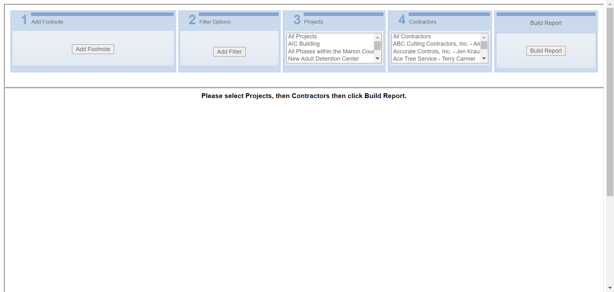 14:36:39 testPayrollAuditSummaryOld Test has been Failed2 14:36:39 org.openqa.selenium.NoSuchElementException: no such element: Unable to locate element: {"method":"xpath","selector":"//a[@id='HlinkExportPDF']"} (Session info: chrome=93.0.4577.63) For documentation on this error, please visit: https://selenium.dev/exceptions/#no_such_element Build info: version: '4.0.0-alpha-4', revision: 'c2d955b49e' System info: host: 'NOURTEK-100', ip: '192.168.29.211', os.name: 'Windows 10', os.arch: 'amd64', os.version: '10.0', java.version: '15.0.2' Driver info: org.openqa.selenium.chrome.ChromeDriver Capabilities {acceptInsecureCerts: false, browserName: chrome, browserVersion: 93.0.4577.63, chrome: {chromedriverVersion: 92.0.4515.107 (87a818b10553..., userDataDir: C:\Users\NDave\AppData\Loca...}, goog:chromeOptions: {debuggerAddress: localhost:62452}, javascriptEnabled: true, networkConnectionEnabled: false, pageLoadStrategy: normal, platform: WINDOWS, platformName: WINDOWS, proxy: Proxy(), setWindowRect: true, strictFileInteractability: false, timeouts: {implicit: 0, pageLoad: 300000, script: 30000}, unhandledPromptBehavior: dismiss and notify, webauthn:extension:credBlob: true, webauthn:extension:largeBlob: true, webauthn:virtualAuthenticators: true} Session ID: 86e68cfa352bcf501639ecdce9f03221 *** Element info: {Using=xpath, value=//a[@id='HlinkExportPDF']} at java.base/jdk.internal.reflect.NativeConstructorAccessorImpl.newInstance0(Native Method) at java.base/jdk.internal.reflect.NativeConstructorAccessorImpl.newInstance(NativeConstructorAccessorImpl.java:64) at java.base/jdk.internal.reflect.DelegatingConstructorAccessorImpl.newInstance(DelegatingConstructorAccessorImpl.java:45) at java.base/java.lang.reflect.Constructor.newInstanceWithCaller(Constructor.java:500) at java.base/java.lang.reflect.Constructor.newInstance(Constructor.java:481) at org.openqa.selenium.remote.codec.w3c.W3CHttpResponseCodec.createException(W3CHttpResponseCodec.java:196) at org.openqa.selenium.remote.codec.w3c.W3CHttpResponseCodec.decode(W3CHttpResponseCodec.java:129) at org.openqa.selenium.remote.codec.w3c.W3CHttpResponseCodec.decode(W3CHttpResponseCodec.java:53) at org.openqa.selenium.remote.HttpCommandExecutor.execute(HttpCommandExecutor.java:161) at org.openqa.selenium.remote.service.DriverCommandExecutor.execute(DriverCommandExecutor.java:83) at org.openqa.selenium.remote.RemoteWebDriver.execute(RemoteWebDriver.java:582) at org.openqa.selenium.remote.RemoteWebDriver.findElement(RemoteWebDriver.java:333) at org.openqa.selenium.remote.RemoteWebDriver.findElementByXPath(RemoteWebDriver.java:451) at org.openqa.selenium.By$ByXPath.findElement(By.java:394) at org.openqa.selenium.remote.RemoteWebDriver.findElement(RemoteWebDriver.java:325) at ObjectRepository.Report_PayrollAuditSummaryOld.linkExportToPDF(Report_PayrollAuditSummaryOld.java:90) at TestScript.Report_PayrollAuditSummaryOld_Test.testPayrollAuditSummaryOld(Report_PayrollAuditSummaryOld_Test.java:84) at java.base/jdk.internal.reflect.NativeMethodAccessorImpl.invoke0(Native Method) at java.base/jdk.internal.reflect.NativeMethodAccessorImpl.invoke(NativeMethodAccessorImpl.java:64) at java.base/jdk.internal.reflect.DelegatingMethodAccessorImpl.invoke(DelegatingMethodAccessorImpl.java:43) at java.base/java.lang.reflect.Method.invoke(Method.java:564) at org.testng.internal.MethodInvocationHelper.invokeMethod(MethodInvocationHelper.java:133) at org.testng.internal.TestInvoker.invokeMethod(TestInvoker.java:598) at org.testng.internal.TestInvoker.invokeTestMethod(TestInvoker.java:173) at org.testng.internal.MethodRunner.runInSequence(MethodRunner.java:46) at org.testng.internal.TestInvoker$MethodInvocationAgent.invoke(TestInvoker.java:824) at org.testng.internal.TestInvoker.invokeTestMethods(TestInvoker.java:146) at org.testng.internal.TestMethodWorker.invokeTestMethods(TestMethodWorker.java:146) at org.testng.internal.TestMethodWorker.run(TestMethodWorker.java:128) at java.base/java.util.ArrayList.forEach(ArrayList.java:1511) at org.testng.TestRunner.privateRun(TestRunner.java:794) at org.testng.TestRunner.run(TestRunner.java:596) at org.testng.SuiteRunner.runTest(SuiteRunner.java:377) at org.testng.SuiteRunner.runSequentially(SuiteRunner.java:371) at org.testng.SuiteRunner.privateRun(SuiteRunner.java:332) at org.testng.SuiteRunner.run(SuiteRunner.java:276) at org.testng.SuiteRunnerWorker.runSuite(SuiteRunnerWorker.java:53) at org.testng.SuiteRunnerWorker.run(SuiteRunnerWorker.java:96) at org.testng.TestNG.runSuitesSequentially(TestNG.java:1212) at org.testng.TestNG.runSuitesLocally(TestNG.java:1134) at org.testng.TestNG.runSuites(TestNG.java:1063) at org.testng.TestNG.run(TestNG.java:1031) at org.testng.remote.AbstractRemoteTestNG.run(AbstractRemoteTestNG.java:115) at org.testng.remote.RemoteTestNG.initAndRun(RemoteTestNG.java:251) at org.testng.remote.RemoteTestNG.main(RemoteTestNG.java:77)14:36:40 
14:36:40 Test Ended -
Report_EnrollmentDetailReportOld_Test :: testEnrollmentDetailReportOld fail2021-09-02 14:37:27 2021-09-02 14:39:45 0h 2m 18s+654mstestEnrollmentDetailReportOldFunctional Test
Status Timestamp Details 14:37:27 Test Started 14:37:27 Browser Name chrome 14:38:28 https://beta.wrapportal.com/login.aspx?ReturnUrl=%2f Current Url 14:38:28 nourNFP User Name Entered Successfully 14:38:28 8jlR8)b59k Password Entered Successfully 14:38:30 Clicked On Login Button 14:38:30 Login Successfully 14:39:36 org.openqa.selenium.remote.UnreachableBrowserException: Error communicating with the remote browser. It may have died. Build info: version: '4.0.0-alpha-4', revision: 'c2d955b49e' System info: host: 'NOURTEK-100', ip: '192.168.29.211', os.name: 'Windows 10', os.arch: 'amd64', os.version: '10.0', java.version: '15.0.2' Driver info: driver.version: RemoteWebDriver Capabilities {acceptInsecureCerts: false, browserName: chrome, browserVersion: 93.0.4577.63, chrome: {chromedriverVersion: 92.0.4515.107 (87a818b10553..., userDataDir: C:\Users\NDave\AppData\Loca...}, goog:chromeOptions: {debuggerAddress: localhost:50749}, javascriptEnabled: true, networkConnectionEnabled: false, pageLoadStrategy: normal, platform: WINDOWS, platformName: WINDOWS, proxy: Proxy(), setWindowRect: true, strictFileInteractability: false, timeouts: {implicit: 0, pageLoad: 300000, script: 30000}, unhandledPromptBehavior: dismiss and notify, webauthn:extension:credBlob: true, webauthn:extension:largeBlob: true, webauthn:virtualAuthenticators: true} Session ID: 48690c6c2396d0276b25dee78b561878 Something Went Wrong 14:39:43 Something Went Wrong 
14:39:43 org.openqa.selenium.NoSuchFrameException: no such frame (Session info: chrome=93.0.4577.63) Build info: version: '4.0.0-alpha-4', revision: 'c2d955b49e' System info: host: 'NOURTEK-100', ip: '192.168.29.211', os.name: 'Windows 10', os.arch: 'amd64', os.version: '10.0', java.version: '15.0.2' Driver info: org.openqa.selenium.chrome.ChromeDriver Capabilities {acceptInsecureCerts: false, browserName: chrome, browserVersion: 93.0.4577.63, chrome: {chromedriverVersion: 92.0.4515.107 (87a818b10553..., userDataDir: C:\Users\NDave\AppData\Loca...}, goog:chromeOptions: {debuggerAddress: localhost:50749}, javascriptEnabled: true, networkConnectionEnabled: false, pageLoadStrategy: normal, platform: WINDOWS, platformName: WINDOWS, proxy: Proxy(), setWindowRect: true, strictFileInteractability: false, timeouts: {implicit: 0, pageLoad: 300000, script: 30000}, unhandledPromptBehavior: dismiss and notify, webauthn:extension:credBlob: true, webauthn:extension:largeBlob: true, webauthn:virtualAuthenticators: true} Session ID: 48690c6c2396d0276b25dee78b561878Report Header Name Not Matched 14:39:44 Something Went Wrong 
14:39:44 testEnrollmentDetailReportOld Test has been Failed2 14:39:44 org.openqa.selenium.NoSuchFrameException: no such frame (Session info: chrome=93.0.4577.63) Build info: version: '4.0.0-alpha-4', revision: 'c2d955b49e' System info: host: 'NOURTEK-100', ip: '192.168.29.211', os.name: 'Windows 10', os.arch: 'amd64', os.version: '10.0', java.version: '15.0.2' Driver info: org.openqa.selenium.chrome.ChromeDriver Capabilities {acceptInsecureCerts: false, browserName: chrome, browserVersion: 93.0.4577.63, chrome: {chromedriverVersion: 92.0.4515.107 (87a818b10553..., userDataDir: C:\Users\NDave\AppData\Loca...}, goog:chromeOptions: {debuggerAddress: localhost:50749}, javascriptEnabled: true, networkConnectionEnabled: false, pageLoadStrategy: normal, platform: WINDOWS, platformName: WINDOWS, proxy: Proxy(), setWindowRect: true, strictFileInteractability: false, timeouts: {implicit: 0, pageLoad: 300000, script: 30000}, unhandledPromptBehavior: dismiss and notify, webauthn:extension:credBlob: true, webauthn:extension:largeBlob: true, webauthn:virtualAuthenticators: true} Session ID: 48690c6c2396d0276b25dee78b561878 at java.base/jdk.internal.reflect.NativeConstructorAccessorImpl.newInstance0(Native Method) at java.base/jdk.internal.reflect.NativeConstructorAccessorImpl.newInstance(NativeConstructorAccessorImpl.java:64) at java.base/jdk.internal.reflect.DelegatingConstructorAccessorImpl.newInstance(DelegatingConstructorAccessorImpl.java:45) at java.base/java.lang.reflect.Constructor.newInstanceWithCaller(Constructor.java:500) at java.base/java.lang.reflect.Constructor.newInstance(Constructor.java:481) at org.openqa.selenium.remote.codec.w3c.W3CHttpResponseCodec.createException(W3CHttpResponseCodec.java:196) at org.openqa.selenium.remote.codec.w3c.W3CHttpResponseCodec.decode(W3CHttpResponseCodec.java:129) at org.openqa.selenium.remote.codec.w3c.W3CHttpResponseCodec.decode(W3CHttpResponseCodec.java:53) at org.openqa.selenium.remote.HttpCommandExecutor.execute(HttpCommandExecutor.java:161) at org.openqa.selenium.remote.service.DriverCommandExecutor.execute(DriverCommandExecutor.java:83) at org.openqa.selenium.remote.RemoteWebDriver.execute(RemoteWebDriver.java:582) at org.openqa.selenium.remote.RemoteWebDriver$RemoteTargetLocator.frame(RemoteWebDriver.java:945) at TestScript.Report_EnrollmentDetailReportOld_Test.testEnrollmentDetailReportOld(Report_EnrollmentDetailReportOld_Test.java:99) at java.base/jdk.internal.reflect.NativeMethodAccessorImpl.invoke0(Native Method) at java.base/jdk.internal.reflect.NativeMethodAccessorImpl.invoke(NativeMethodAccessorImpl.java:64) at java.base/jdk.internal.reflect.DelegatingMethodAccessorImpl.invoke(DelegatingMethodAccessorImpl.java:43) at java.base/java.lang.reflect.Method.invoke(Method.java:564) at org.testng.internal.MethodInvocationHelper.invokeMethod(MethodInvocationHelper.java:133) at org.testng.internal.TestInvoker.invokeMethod(TestInvoker.java:598) at org.testng.internal.TestInvoker.invokeTestMethod(TestInvoker.java:173) at org.testng.internal.MethodRunner.runInSequence(MethodRunner.java:46) at org.testng.internal.TestInvoker$MethodInvocationAgent.invoke(TestInvoker.java:824) at org.testng.internal.TestInvoker.invokeTestMethods(TestInvoker.java:146) at org.testng.internal.TestMethodWorker.invokeTestMethods(TestMethodWorker.java:146) at org.testng.internal.TestMethodWorker.run(TestMethodWorker.java:128) at java.base/java.util.ArrayList.forEach(ArrayList.java:1511) at org.testng.TestRunner.privateRun(TestRunner.java:794) at org.testng.TestRunner.run(TestRunner.java:596) at org.testng.SuiteRunner.runTest(SuiteRunner.java:377) at org.testng.SuiteRunner.runSequentially(SuiteRunner.java:371) at org.testng.SuiteRunner.privateRun(SuiteRunner.java:332) at org.testng.SuiteRunner.run(SuiteRunner.java:276) at org.testng.SuiteRunnerWorker.runSuite(SuiteRunnerWorker.java:53) at org.testng.SuiteRunnerWorker.run(SuiteRunnerWorker.java:96) at org.testng.TestNG.runSuitesSequentially(TestNG.java:1212) at org.testng.TestNG.runSuitesLocally(TestNG.java:1134) at org.testng.TestNG.runSuites(TestNG.java:1063) at org.testng.TestNG.run(TestNG.java:1031) at org.testng.remote.AbstractRemoteTestNG.run(AbstractRemoteTestNG.java:115) at org.testng.remote.RemoteTestNG.initAndRun(RemoteTestNG.java:251) at org.testng.remote.RemoteTestNG.main(RemoteTestNG.java:77)14:39:45 
14:39:45 Test Ended -
Report_ContractorDetailsOld_Test :: testContractorDetailsOld fail2021-09-02 14:40:15 2021-09-02 14:44:36 0h 4m 20s+913mstestContractorDetailsOldFunctional Test
Status Timestamp Details 14:40:15 Test Started 14:40:15 Browser Name chrome 14:41:06 https://beta.wrapportal.com/login.aspx?ReturnUrl=%2f Current Url 14:41:06 nourNFP User Name Entered Successfully 14:41:07 8jlR8)b59k Password Entered Successfully 14:41:08 Clicked On Login Button 14:41:08 Login Successfully 14:42:09 Clicked on Report Module Icon 14:42:12 Respective Program Select Form Dropdown 14:42:29 Contractor Details Report is Selected 14:43:29 org.openqa.selenium.remote.UnreachableBrowserException: Error communicating with the remote browser. It may have died. Build info: version: '4.0.0-alpha-4', revision: 'c2d955b49e' System info: host: 'NOURTEK-100', ip: '192.168.29.211', os.name: 'Windows 10', os.arch: 'amd64', os.version: '10.0', java.version: '15.0.2' Driver info: driver.version: RemoteWebDriver Capabilities {acceptInsecureCerts: false, browserName: chrome, browserVersion: 93.0.4577.63, chrome: {chromedriverVersion: 92.0.4515.107 (87a818b10553..., userDataDir: C:\Users\NDave\AppData\Loca...}, goog:chromeOptions: {debuggerAddress: localhost:60180}, javascriptEnabled: true, networkConnectionEnabled: false, pageLoadStrategy: normal, platform: WINDOWS, platformName: WINDOWS, proxy: Proxy(), setWindowRect: true, strictFileInteractability: false, timeouts: {implicit: 0, pageLoad: 300000, script: 30000}, unhandledPromptBehavior: dismiss and notify, webauthn:extension:credBlob: true, webauthn:extension:largeBlob: true, webauthn:virtualAuthenticators: true} Session ID: 24e2ecf2b899792ed6211fc4b7fb6587 Something Went Wrong 14:43:35 Something Went Wrong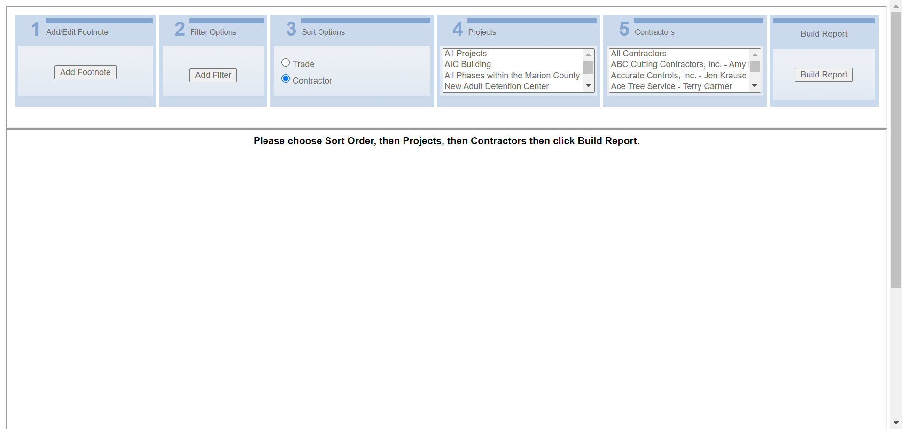 14:44:05 org.openqa.selenium.NoSuchElementException: no such element: Unable to locate element: {"method":"xpath","selector":"//span[@id='Label1']"} (Session info: chrome=93.0.4577.63) For documentation on this error, please visit: https://selenium.dev/exceptions/#no_such_element Build info: version: '4.0.0-alpha-4', revision: 'c2d955b49e' System info: host: 'NOURTEK-100', ip: '192.168.29.211', os.name: 'Windows 10', os.arch: 'amd64', os.version: '10.0', java.version: '15.0.2' Driver info: org.openqa.selenium.chrome.ChromeDriver Capabilities {acceptInsecureCerts: false, browserName: chrome, browserVersion: 93.0.4577.63, chrome: {chromedriverVersion: 92.0.4515.107 (87a818b10553..., userDataDir: C:\Users\NDave\AppData\Loca...}, goog:chromeOptions: {debuggerAddress: localhost:60180}, javascriptEnabled: true, networkConnectionEnabled: false, pageLoadStrategy: normal, platform: WINDOWS, platformName: WINDOWS, proxy: Proxy(), setWindowRect: true, strictFileInteractability: false, timeouts: {implicit: 0, pageLoad: 300000, script: 30000}, unhandledPromptBehavior: dismiss and notify, webauthn:extension:credBlob: true, webauthn:extension:largeBlob: true, webauthn:virtualAuthenticators: true} Session ID: 24e2ecf2b899792ed6211fc4b7fb6587 *** Element info: {Using=xpath, value=//span[@id='Label1']}Report Header Name Not Matched 14:44:06 Something Went Wrong 
14:44:36 testContractorDetailsOld Test has been Failed2 14:44:36 org.openqa.selenium.NoSuchElementException: no such element: Unable to locate element: {"method":"xpath","selector":"//a[@id='HlinkExportPDF']"} (Session info: chrome=93.0.4577.63) For documentation on this error, please visit: https://selenium.dev/exceptions/#no_such_element Build info: version: '4.0.0-alpha-4', revision: 'c2d955b49e' System info: host: 'NOURTEK-100', ip: '192.168.29.211', os.name: 'Windows 10', os.arch: 'amd64', os.version: '10.0', java.version: '15.0.2' Driver info: org.openqa.selenium.chrome.ChromeDriver Capabilities {acceptInsecureCerts: false, browserName: chrome, browserVersion: 93.0.4577.63, chrome: {chromedriverVersion: 92.0.4515.107 (87a818b10553..., userDataDir: C:\Users\NDave\AppData\Loca...}, goog:chromeOptions: {debuggerAddress: localhost:60180}, javascriptEnabled: true, networkConnectionEnabled: false, pageLoadStrategy: normal, platform: WINDOWS, platformName: WINDOWS, proxy: Proxy(), setWindowRect: true, strictFileInteractability: false, timeouts: {implicit: 0, pageLoad: 300000, script: 30000}, unhandledPromptBehavior: dismiss and notify, webauthn:extension:credBlob: true, webauthn:extension:largeBlob: true, webauthn:virtualAuthenticators: true} Session ID: 24e2ecf2b899792ed6211fc4b7fb6587 *** Element info: {Using=xpath, value=//a[@id='HlinkExportPDF']} at java.base/jdk.internal.reflect.NativeConstructorAccessorImpl.newInstance0(Native Method) at java.base/jdk.internal.reflect.NativeConstructorAccessorImpl.newInstance(NativeConstructorAccessorImpl.java:64) at java.base/jdk.internal.reflect.DelegatingConstructorAccessorImpl.newInstance(DelegatingConstructorAccessorImpl.java:45) at java.base/java.lang.reflect.Constructor.newInstanceWithCaller(Constructor.java:500) at java.base/java.lang.reflect.Constructor.newInstance(Constructor.java:481) at org.openqa.selenium.remote.codec.w3c.W3CHttpResponseCodec.createException(W3CHttpResponseCodec.java:196) at org.openqa.selenium.remote.codec.w3c.W3CHttpResponseCodec.decode(W3CHttpResponseCodec.java:129) at org.openqa.selenium.remote.codec.w3c.W3CHttpResponseCodec.decode(W3CHttpResponseCodec.java:53) at org.openqa.selenium.remote.HttpCommandExecutor.execute(HttpCommandExecutor.java:161) at org.openqa.selenium.remote.service.DriverCommandExecutor.execute(DriverCommandExecutor.java:83) at org.openqa.selenium.remote.RemoteWebDriver.execute(RemoteWebDriver.java:582) at org.openqa.selenium.remote.RemoteWebDriver.findElement(RemoteWebDriver.java:333) at org.openqa.selenium.remote.RemoteWebDriver.findElementByXPath(RemoteWebDriver.java:451) at org.openqa.selenium.By$ByXPath.findElement(By.java:394) at org.openqa.selenium.remote.RemoteWebDriver.findElement(RemoteWebDriver.java:325) at ObjectRepository.Report_EnrollmentListReportOld.linkExportToPDF(Report_EnrollmentListReportOld.java:90) at TestScript.Report_ContractorDetailsOld_Test.testContractorDetailsOld(Report_ContractorDetailsOld_Test.java:84) at java.base/jdk.internal.reflect.NativeMethodAccessorImpl.invoke0(Native Method) at java.base/jdk.internal.reflect.NativeMethodAccessorImpl.invoke(NativeMethodAccessorImpl.java:64) at java.base/jdk.internal.reflect.DelegatingMethodAccessorImpl.invoke(DelegatingMethodAccessorImpl.java:43) at java.base/java.lang.reflect.Method.invoke(Method.java:564) at org.testng.internal.MethodInvocationHelper.invokeMethod(MethodInvocationHelper.java:133) at org.testng.internal.TestInvoker.invokeMethod(TestInvoker.java:598) at org.testng.internal.TestInvoker.invokeTestMethod(TestInvoker.java:173) at org.testng.internal.MethodRunner.runInSequence(MethodRunner.java:46) at org.testng.internal.TestInvoker$MethodInvocationAgent.invoke(TestInvoker.java:824) at org.testng.internal.TestInvoker.invokeTestMethods(TestInvoker.java:146) at org.testng.internal.TestMethodWorker.invokeTestMethods(TestMethodWorker.java:146) at org.testng.internal.TestMethodWorker.run(TestMethodWorker.java:128) at java.base/java.util.ArrayList.forEach(ArrayList.java:1511) at org.testng.TestRunner.privateRun(TestRunner.java:794) at org.testng.TestRunner.run(TestRunner.java:596) at org.testng.SuiteRunner.runTest(SuiteRunner.java:377) at org.testng.SuiteRunner.runSequentially(SuiteRunner.java:371) at org.testng.SuiteRunner.privateRun(SuiteRunner.java:332) at org.testng.SuiteRunner.run(SuiteRunner.java:276) at org.testng.SuiteRunnerWorker.runSuite(SuiteRunnerWorker.java:53) at org.testng.SuiteRunnerWorker.run(SuiteRunnerWorker.java:96) at org.testng.TestNG.runSuitesSequentially(TestNG.java:1212) at org.testng.TestNG.runSuitesLocally(TestNG.java:1134) at org.testng.TestNG.runSuites(TestNG.java:1063) at org.testng.TestNG.run(TestNG.java:1031) at org.testng.remote.AbstractRemoteTestNG.run(AbstractRemoteTestNG.java:115) at org.testng.remote.RemoteTestNG.initAndRun(RemoteTestNG.java:251) at org.testng.remote.RemoteTestNG.main(RemoteTestNG.java:77)14:44:36 
14:44:36 Test Ended -
Report_Certificate_Log_Old_Test :: testProjectSummaryReportOld fail2021-09-02 14:45:19 2021-09-02 14:46:53 0h 1m 33s+756mstestProjectSummaryReportOldFunctional Test
Status Timestamp Details 14:45:19 Test Started 14:45:19 Browser Name chrome 14:46:19 org.openqa.selenium.remote.UnreachableBrowserException: Error communicating with the remote browser. It may have died. Build info: version: '4.0.0-alpha-4', revision: 'c2d955b49e' System info: host: 'NOURTEK-100', ip: '192.168.29.211', os.name: 'Windows 10', os.arch: 'amd64', os.version: '10.0', java.version: '15.0.2' Driver info: driver.version: RemoteWebDriver Capabilities {acceptInsecureCerts: false, browserName: chrome, browserVersion: 93.0.4577.63, chrome: {chromedriverVersion: 92.0.4515.107 (87a818b10553..., userDataDir: C:\Users\NDave\AppData\Loca...}, goog:chromeOptions: {debuggerAddress: localhost:56082}, javascriptEnabled: true, networkConnectionEnabled: false, pageLoadStrategy: normal, platform: WINDOWS, platformName: WINDOWS, proxy: Proxy(), setWindowRect: true, strictFileInteractability: false, timeouts: {implicit: 0, pageLoad: 300000, script: 30000}, unhandledPromptBehavior: dismiss and notify, webauthn:extension:credBlob: true, webauthn:extension:largeBlob: true, webauthn:virtualAuthenticators: true} Session ID: 0c28eb76de41c718b738a42bece25b82 Something Went Wrong 14:46:22 Something Went Wrong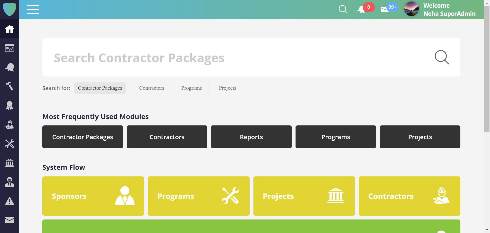 14:46:22 org.openqa.selenium.NoSuchFrameException: no such frame (Session info: chrome=93.0.4577.63) Build info: version: '4.0.0-alpha-4', revision: 'c2d955b49e' System info: host: 'NOURTEK-100', ip: '192.168.29.211', os.name: 'Windows 10', os.arch: 'amd64', os.version: '10.0', java.version: '15.0.2' Driver info: org.openqa.selenium.chrome.ChromeDriver Capabilities {acceptInsecureCerts: false, browserName: chrome, browserVersion: 93.0.4577.63, chrome: {chromedriverVersion: 92.0.4515.107 (87a818b10553..., userDataDir: C:\Users\NDave\AppData\Loca...}, goog:chromeOptions: {debuggerAddress: localhost:56082}, javascriptEnabled: true, networkConnectionEnabled: false, pageLoadStrategy: normal, platform: WINDOWS, platformName: WINDOWS, proxy: Proxy(), setWindowRect: true, strictFileInteractability: false, timeouts: {implicit: 0, pageLoad: 300000, script: 30000}, unhandledPromptBehavior: dismiss and notify, webauthn:extension:credBlob: true, webauthn:extension:largeBlob: true, webauthn:virtualAuthenticators: true} Session ID: 0c28eb76de41c718b738a42bece25b82Report Header Name Not Matched 14:46:22 Something Went Wrong 14:46:52 testProjectSummaryReportOld Test has been Failed2 14:46:52 org.openqa.selenium.NoSuchElementException: no such element: Unable to locate element: {"method":"xpath","selector":"//a[@id='HlinkExportPDF']"} (Session info: chrome=93.0.4577.63) For documentation on this error, please visit: https://selenium.dev/exceptions/#no_such_element Build info: version: '4.0.0-alpha-4', revision: 'c2d955b49e' System info: host: 'NOURTEK-100', ip: '192.168.29.211', os.name: 'Windows 10', os.arch: 'amd64', os.version: '10.0', java.version: '15.0.2' Driver info: org.openqa.selenium.chrome.ChromeDriver Capabilities {acceptInsecureCerts: false, browserName: chrome, browserVersion: 93.0.4577.63, chrome: {chromedriverVersion: 92.0.4515.107 (87a818b10553..., userDataDir: C:\Users\NDave\AppData\Loca...}, goog:chromeOptions: {debuggerAddress: localhost:56082}, javascriptEnabled: true, networkConnectionEnabled: false, pageLoadStrategy: normal, platform: WINDOWS, platformName: WINDOWS, proxy: Proxy(), setWindowRect: true, strictFileInteractability: false, timeouts: {implicit: 0, pageLoad: 300000, script: 30000}, unhandledPromptBehavior: dismiss and notify, webauthn:extension:credBlob: true, webauthn:extension:largeBlob: true, webauthn:virtualAuthenticators: true} Session ID: 0c28eb76de41c718b738a42bece25b82 *** Element info: {Using=xpath, value=//a[@id='HlinkExportPDF']} at java.base/jdk.internal.reflect.NativeConstructorAccessorImpl.newInstance0(Native Method) at java.base/jdk.internal.reflect.NativeConstructorAccessorImpl.newInstance(NativeConstructorAccessorImpl.java:64) at java.base/jdk.internal.reflect.DelegatingConstructorAccessorImpl.newInstance(DelegatingConstructorAccessorImpl.java:45) at java.base/java.lang.reflect.Constructor.newInstanceWithCaller(Constructor.java:500) at java.base/java.lang.reflect.Constructor.newInstance(Constructor.java:481) at org.openqa.selenium.remote.codec.w3c.W3CHttpResponseCodec.createException(W3CHttpResponseCodec.java:196) at org.openqa.selenium.remote.codec.w3c.W3CHttpResponseCodec.decode(W3CHttpResponseCodec.java:129) at org.openqa.selenium.remote.codec.w3c.W3CHttpResponseCodec.decode(W3CHttpResponseCodec.java:53) at org.openqa.selenium.remote.HttpCommandExecutor.execute(HttpCommandExecutor.java:161) at org.openqa.selenium.remote.service.DriverCommandExecutor.execute(DriverCommandExecutor.java:83) at org.openqa.selenium.remote.RemoteWebDriver.execute(RemoteWebDriver.java:582) at org.openqa.selenium.remote.RemoteWebDriver.findElement(RemoteWebDriver.java:333) at org.openqa.selenium.remote.RemoteWebDriver.findElementByXPath(RemoteWebDriver.java:451) at org.openqa.selenium.By$ByXPath.findElement(By.java:394) at org.openqa.selenium.remote.RemoteWebDriver.findElement(RemoteWebDriver.java:325) at ObjectRepository.Report_EnrollmentListReportOld.linkExportToPDF(Report_EnrollmentListReportOld.java:90) at TestScript.Report_Certificate_Log_Old_Test.testProjectSummaryReportOld(Report_Certificate_Log_Old_Test.java:70) at java.base/jdk.internal.reflect.NativeMethodAccessorImpl.invoke0(Native Method) at java.base/jdk.internal.reflect.NativeMethodAccessorImpl.invoke(NativeMethodAccessorImpl.java:64) at java.base/jdk.internal.reflect.DelegatingMethodAccessorImpl.invoke(DelegatingMethodAccessorImpl.java:43) at java.base/java.lang.reflect.Method.invoke(Method.java:564) at org.testng.internal.MethodInvocationHelper.invokeMethod(MethodInvocationHelper.java:133) at org.testng.internal.TestInvoker.invokeMethod(TestInvoker.java:598) at org.testng.internal.TestInvoker.invokeTestMethod(TestInvoker.java:173) at org.testng.internal.MethodRunner.runInSequence(MethodRunner.java:46) at org.testng.internal.TestInvoker$MethodInvocationAgent.invoke(TestInvoker.java:824) at org.testng.internal.TestInvoker.invokeTestMethods(TestInvoker.java:146) at org.testng.internal.TestMethodWorker.invokeTestMethods(TestMethodWorker.java:146) at org.testng.internal.TestMethodWorker.run(TestMethodWorker.java:128) at java.base/java.util.ArrayList.forEach(ArrayList.java:1511) at org.testng.TestRunner.privateRun(TestRunner.java:794) at org.testng.TestRunner.run(TestRunner.java:596) at org.testng.SuiteRunner.runTest(SuiteRunner.java:377) at org.testng.SuiteRunner.runSequentially(SuiteRunner.java:371) at org.testng.SuiteRunner.privateRun(SuiteRunner.java:332) at org.testng.SuiteRunner.run(SuiteRunner.java:276) at org.testng.SuiteRunnerWorker.runSuite(SuiteRunnerWorker.java:53) at org.testng.SuiteRunnerWorker.run(SuiteRunnerWorker.java:96) at org.testng.TestNG.runSuitesSequentially(TestNG.java:1212) at org.testng.TestNG.runSuitesLocally(TestNG.java:1134) at org.testng.TestNG.runSuites(TestNG.java:1063) at org.testng.TestNG.run(TestNG.java:1031) at org.testng.remote.AbstractRemoteTestNG.run(AbstractRemoteTestNG.java:115) at org.testng.remote.RemoteTestNG.initAndRun(RemoteTestNG.java:251) at org.testng.remote.RemoteTestNG.main(RemoteTestNG.java:77)14:46:53 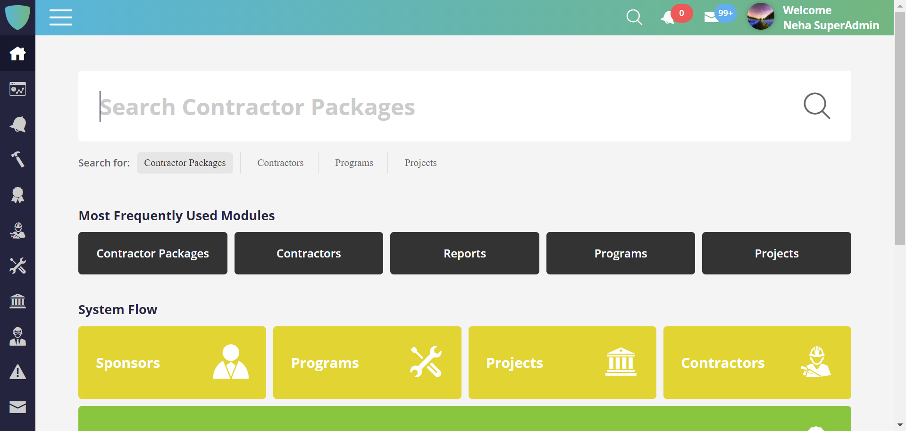 14:46:53 Test Ended -
Report_StatusReportOld_Test :: testStatusReportOld fail2021-09-02 14:47:09 2021-09-02 14:49:47 0h 2m 38s+789mstestStatusReportOldFunctional Test
Status Timestamp Details 14:47:09 Test Started 14:47:09 Browser Name chrome 14:48:02 https://beta.wrapportal.com/login.aspx?ReturnUrl=%2f Current Url 14:48:02 nourNFP User Name Entered Successfully 14:48:02 8jlR8)b59k Password Entered Successfully 14:48:04 Clicked On Login Button 14:48:04 Login Successfully 14:49:08 org.openqa.selenium.remote.UnreachableBrowserException: Error communicating with the remote browser. It may have died. Build info: version: '4.0.0-alpha-4', revision: 'c2d955b49e' System info: host: 'NOURTEK-100', ip: '192.168.29.211', os.name: 'Windows 10', os.arch: 'amd64', os.version: '10.0', java.version: '15.0.2' Driver info: driver.version: RemoteWebDriver Capabilities {acceptInsecureCerts: false, browserName: chrome, browserVersion: 93.0.4577.63, chrome: {chromedriverVersion: 92.0.4515.107 (87a818b10553..., userDataDir: C:\Users\NDave\AppData\Loca...}, goog:chromeOptions: {debuggerAddress: localhost:52985}, javascriptEnabled: true, networkConnectionEnabled: false, pageLoadStrategy: normal, platform: WINDOWS, platformName: WINDOWS, proxy: Proxy(), setWindowRect: true, strictFileInteractability: false, timeouts: {implicit: 0, pageLoad: 300000, script: 30000}, unhandledPromptBehavior: dismiss and notify, webauthn:extension:credBlob: true, webauthn:extension:largeBlob: true, webauthn:virtualAuthenticators: true} Session ID: e907971ac80100cf21cc27b90d4b80dc Something Went Wrong 14:49:15 Something Went Wrong 14:49:15 org.openqa.selenium.NoSuchFrameException: no such frame (Session info: chrome=93.0.4577.63) Build info: version: '4.0.0-alpha-4', revision: 'c2d955b49e' System info: host: 'NOURTEK-100', ip: '192.168.29.211', os.name: 'Windows 10', os.arch: 'amd64', os.version: '10.0', java.version: '15.0.2' Driver info: org.openqa.selenium.chrome.ChromeDriver Capabilities {acceptInsecureCerts: false, browserName: chrome, browserVersion: 93.0.4577.63, chrome: {chromedriverVersion: 92.0.4515.107 (87a818b10553..., userDataDir: C:\Users\NDave\AppData\Loca...}, goog:chromeOptions: {debuggerAddress: localhost:52985}, javascriptEnabled: true, networkConnectionEnabled: false, pageLoadStrategy: normal, platform: WINDOWS, platformName: WINDOWS, proxy: Proxy(), setWindowRect: true, strictFileInteractability: false, timeouts: {implicit: 0, pageLoad: 300000, script: 30000}, unhandledPromptBehavior: dismiss and notify, webauthn:extension:credBlob: true, webauthn:extension:largeBlob: true, webauthn:virtualAuthenticators: true} Session ID: e907971ac80100cf21cc27b90d4b80dcReport Header Name Not Matched 14:49:16 Something Went Wrong 
14:49:46 testStatusReportOld Test has been Failed2 14:49:46 org.openqa.selenium.NoSuchElementException: no such element: Unable to locate element: {"method":"xpath","selector":"//a[@id='HlinkExportPDF']"} (Session info: chrome=93.0.4577.63) For documentation on this error, please visit: https://selenium.dev/exceptions/#no_such_element Build info: version: '4.0.0-alpha-4', revision: 'c2d955b49e' System info: host: 'NOURTEK-100', ip: '192.168.29.211', os.name: 'Windows 10', os.arch: 'amd64', os.version: '10.0', java.version: '15.0.2' Driver info: org.openqa.selenium.chrome.ChromeDriver Capabilities {acceptInsecureCerts: false, browserName: chrome, browserVersion: 93.0.4577.63, chrome: {chromedriverVersion: 92.0.4515.107 (87a818b10553..., userDataDir: C:\Users\NDave\AppData\Loca...}, goog:chromeOptions: {debuggerAddress: localhost:52985}, javascriptEnabled: true, networkConnectionEnabled: false, pageLoadStrategy: normal, platform: WINDOWS, platformName: WINDOWS, proxy: Proxy(), setWindowRect: true, strictFileInteractability: false, timeouts: {implicit: 0, pageLoad: 300000, script: 30000}, unhandledPromptBehavior: dismiss and notify, webauthn:extension:credBlob: true, webauthn:extension:largeBlob: true, webauthn:virtualAuthenticators: true} Session ID: e907971ac80100cf21cc27b90d4b80dc *** Element info: {Using=xpath, value=//a[@id='HlinkExportPDF']} at java.base/jdk.internal.reflect.NativeConstructorAccessorImpl.newInstance0(Native Method) at java.base/jdk.internal.reflect.NativeConstructorAccessorImpl.newInstance(NativeConstructorAccessorImpl.java:64) at java.base/jdk.internal.reflect.DelegatingConstructorAccessorImpl.newInstance(DelegatingConstructorAccessorImpl.java:45) at java.base/java.lang.reflect.Constructor.newInstanceWithCaller(Constructor.java:500) at java.base/java.lang.reflect.Constructor.newInstance(Constructor.java:481) at org.openqa.selenium.remote.codec.w3c.W3CHttpResponseCodec.createException(W3CHttpResponseCodec.java:196) at org.openqa.selenium.remote.codec.w3c.W3CHttpResponseCodec.decode(W3CHttpResponseCodec.java:129) at org.openqa.selenium.remote.codec.w3c.W3CHttpResponseCodec.decode(W3CHttpResponseCodec.java:53) at org.openqa.selenium.remote.HttpCommandExecutor.execute(HttpCommandExecutor.java:161) at org.openqa.selenium.remote.service.DriverCommandExecutor.execute(DriverCommandExecutor.java:83) at org.openqa.selenium.remote.RemoteWebDriver.execute(RemoteWebDriver.java:582) at org.openqa.selenium.remote.RemoteWebDriver.findElement(RemoteWebDriver.java:333) at org.openqa.selenium.remote.RemoteWebDriver.findElementByXPath(RemoteWebDriver.java:451) at org.openqa.selenium.By$ByXPath.findElement(By.java:394) at org.openqa.selenium.remote.RemoteWebDriver.findElement(RemoteWebDriver.java:325) at ObjectRepository.Report_EnrollmentListReportOld.linkExportToPDF(Report_EnrollmentListReportOld.java:90) at TestScript.Report_StatusReportOld_Test.testStatusReportOld(Report_StatusReportOld_Test.java:85) at java.base/jdk.internal.reflect.NativeMethodAccessorImpl.invoke0(Native Method) at java.base/jdk.internal.reflect.NativeMethodAccessorImpl.invoke(NativeMethodAccessorImpl.java:64) at java.base/jdk.internal.reflect.DelegatingMethodAccessorImpl.invoke(DelegatingMethodAccessorImpl.java:43) at java.base/java.lang.reflect.Method.invoke(Method.java:564) at org.testng.internal.MethodInvocationHelper.invokeMethod(MethodInvocationHelper.java:133) at org.testng.internal.TestInvoker.invokeMethod(TestInvoker.java:598) at org.testng.internal.TestInvoker.invokeTestMethod(TestInvoker.java:173) at org.testng.internal.MethodRunner.runInSequence(MethodRunner.java:46) at org.testng.internal.TestInvoker$MethodInvocationAgent.invoke(TestInvoker.java:824) at org.testng.internal.TestInvoker.invokeTestMethods(TestInvoker.java:146) at org.testng.internal.TestMethodWorker.invokeTestMethods(TestMethodWorker.java:146) at org.testng.internal.TestMethodWorker.run(TestMethodWorker.java:128) at java.base/java.util.ArrayList.forEach(ArrayList.java:1511) at org.testng.TestRunner.privateRun(TestRunner.java:794) at org.testng.TestRunner.run(TestRunner.java:596) at org.testng.SuiteRunner.runTest(SuiteRunner.java:377) at org.testng.SuiteRunner.runSequentially(SuiteRunner.java:371) at org.testng.SuiteRunner.privateRun(SuiteRunner.java:332) at org.testng.SuiteRunner.run(SuiteRunner.java:276) at org.testng.SuiteRunnerWorker.runSuite(SuiteRunnerWorker.java:53) at org.testng.SuiteRunnerWorker.run(SuiteRunnerWorker.java:96) at org.testng.TestNG.runSuitesSequentially(TestNG.java:1212) at org.testng.TestNG.runSuitesLocally(TestNG.java:1134) at org.testng.TestNG.runSuites(TestNG.java:1063) at org.testng.TestNG.run(TestNG.java:1031) at org.testng.remote.AbstractRemoteTestNG.run(AbstractRemoteTestNG.java:115) at org.testng.remote.RemoteTestNG.initAndRun(RemoteTestNG.java:251) at org.testng.remote.RemoteTestNG.main(RemoteTestNG.java:77)14:49:47 14:49:47 Test Ended -
Report_CertificateTrackingReportOld_Test :: testCertificateTrackingReportOld fail2021-09-02 14:50:21 2021-09-02 14:54:43 0h 4m 21s+635mstestCertificateTrackingReportOldFunctional Test
Status Timestamp Details 14:50:21 Test Started 14:50:21 Browser Name chrome 14:51:22 https://beta.wrapportal.com/login.aspx?ReturnUrl=%2f Current Url 14:51:22 nourNFP User Name Entered Successfully 14:51:23 8jlR8)b59k Password Entered Successfully 14:51:24 Clicked On Login Button 14:51:24 Login Successfully 14:52:29 Clicked on Report Module Icon 14:52:31 Respective Program Select Form Dropdown 14:53:04 Certificate Tracking Report Report is Selected 14:54:00 Project Selected Successfully 14:54:04 Clicked On Build Report Button 14:54:07 Report Generated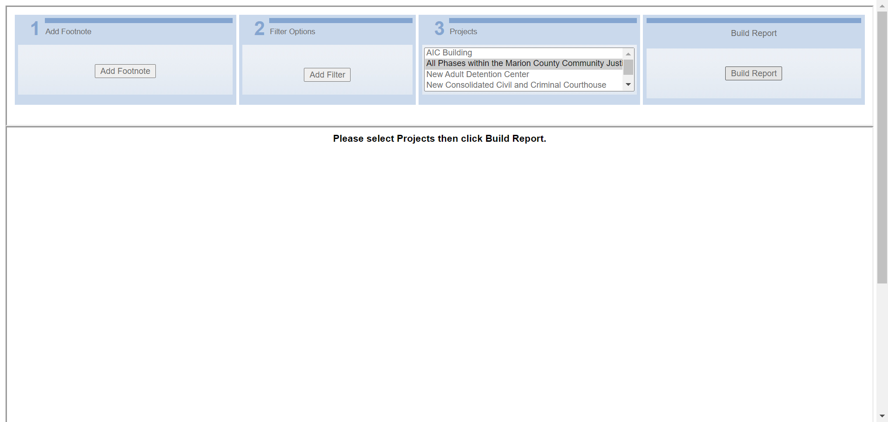 14:54:08 Report Header Name Matched 14:54:08 Report Generated Successfully 14:54:15 Pdf Generated 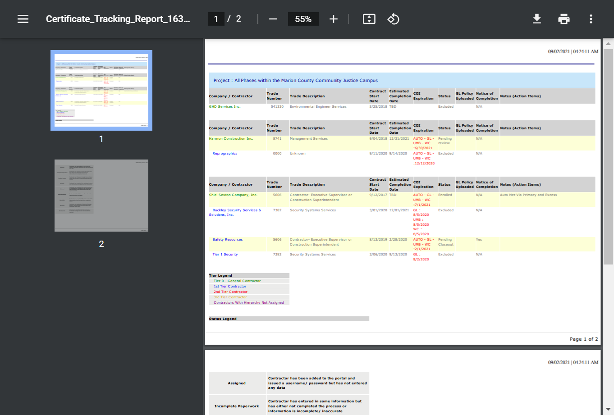 14:54:31 Excel file is not Downloaded Successfully 14:54:43 testCertificateTrackingReportOld Test has been Passed1 14:54:43 Test Ended -
Report_SubcontractorStatusReportOld_Test :: testSubcontractorStatusReportOld fail2021-09-02 14:55:04 2021-09-02 14:59:09 0h 4m 4s+618mstestSubcontractorStatusReportOldFunctional Test
Status Timestamp Details 14:55:04 Test Started 14:55:04 Browser Name chrome 14:55:42 https://beta.wrapportal.com/login.aspx?ReturnUrl=%2f Current Url 14:55:42 nourNFP User Name Entered Successfully 14:55:42 8jlR8)b59k Password Entered Successfully 14:55:44 Clicked On Login Button 14:55:44 Login Successfully 14:56:16 Clicked on Report Module Icon 14:56:19 Respective Program Select Form Dropdown 14:56:56 Subcontractor Status Report is Selected 14:57:56 org.openqa.selenium.remote.UnreachableBrowserException: Error communicating with the remote browser. It may have died. Build info: version: '4.0.0-alpha-4', revision: 'c2d955b49e' System info: host: 'NOURTEK-100', ip: '192.168.29.211', os.name: 'Windows 10', os.arch: 'amd64', os.version: '10.0', java.version: '15.0.2' Driver info: driver.version: RemoteWebDriver Capabilities {acceptInsecureCerts: false, browserName: chrome, browserVersion: 93.0.4577.63, chrome: {chromedriverVersion: 92.0.4515.107 (87a818b10553..., userDataDir: C:\Users\NDave\AppData\Loca...}, goog:chromeOptions: {debuggerAddress: localhost:58501}, javascriptEnabled: true, networkConnectionEnabled: false, pageLoadStrategy: normal, platform: WINDOWS, platformName: WINDOWS, proxy: Proxy(), setWindowRect: true, strictFileInteractability: false, timeouts: {implicit: 0, pageLoad: 300000, script: 30000}, unhandledPromptBehavior: dismiss and notify, webauthn:extension:credBlob: true, webauthn:extension:largeBlob: true, webauthn:virtualAuthenticators: true} Session ID: aeac933a57e13286a749c76365b35077 Something Went Wrong 14:58:08 Something Went Wrong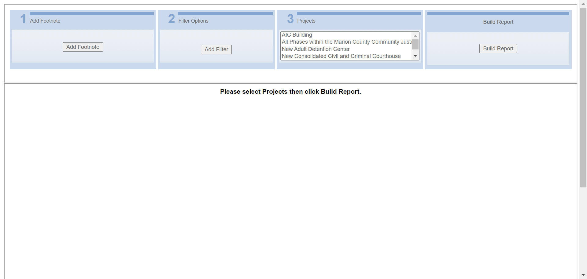 14:58:38 org.openqa.selenium.NoSuchElementException: no such element: Unable to locate element: {"method":"xpath","selector":"//span[@id='Label1']"} (Session info: chrome=93.0.4577.63) For documentation on this error, please visit: https://selenium.dev/exceptions/#no_such_element Build info: version: '4.0.0-alpha-4', revision: 'c2d955b49e' System info: host: 'NOURTEK-100', ip: '192.168.29.211', os.name: 'Windows 10', os.arch: 'amd64', os.version: '10.0', java.version: '15.0.2' Driver info: org.openqa.selenium.chrome.ChromeDriver Capabilities {acceptInsecureCerts: false, browserName: chrome, browserVersion: 93.0.4577.63, chrome: {chromedriverVersion: 92.0.4515.107 (87a818b10553..., userDataDir: C:\Users\NDave\AppData\Loca...}, goog:chromeOptions: {debuggerAddress: localhost:58501}, javascriptEnabled: true, networkConnectionEnabled: false, pageLoadStrategy: normal, platform: WINDOWS, platformName: WINDOWS, proxy: Proxy(), setWindowRect: true, strictFileInteractability: false, timeouts: {implicit: 0, pageLoad: 300000, script: 30000}, unhandledPromptBehavior: dismiss and notify, webauthn:extension:credBlob: true, webauthn:extension:largeBlob: true, webauthn:virtualAuthenticators: true} Session ID: aeac933a57e13286a749c76365b35077 *** Element info: {Using=xpath, value=//span[@id='Label1']}Report Header Name Not Matched 14:58:38 Something Went Wrong 14:59:09 testSubcontractorStatusReportOld Test has been Failed2 14:59:09 org.openqa.selenium.NoSuchElementException: no such element: Unable to locate element: {"method":"xpath","selector":"//a[@id='HlinkExportPDF']"} (Session info: chrome=93.0.4577.63) For documentation on this error, please visit: https://selenium.dev/exceptions/#no_such_element Build info: version: '4.0.0-alpha-4', revision: 'c2d955b49e' System info: host: 'NOURTEK-100', ip: '192.168.29.211', os.name: 'Windows 10', os.arch: 'amd64', os.version: '10.0', java.version: '15.0.2' Driver info: org.openqa.selenium.chrome.ChromeDriver Capabilities {acceptInsecureCerts: false, browserName: chrome, browserVersion: 93.0.4577.63, chrome: {chromedriverVersion: 92.0.4515.107 (87a818b10553..., userDataDir: C:\Users\NDave\AppData\Loca...}, goog:chromeOptions: {debuggerAddress: localhost:58501}, javascriptEnabled: true, networkConnectionEnabled: false, pageLoadStrategy: normal, platform: WINDOWS, platformName: WINDOWS, proxy: Proxy(), setWindowRect: true, strictFileInteractability: false, timeouts: {implicit: 0, pageLoad: 300000, script: 30000}, unhandledPromptBehavior: dismiss and notify, webauthn:extension:credBlob: true, webauthn:extension:largeBlob: true, webauthn:virtualAuthenticators: true} Session ID: aeac933a57e13286a749c76365b35077 *** Element info: {Using=xpath, value=//a[@id='HlinkExportPDF']} at java.base/jdk.internal.reflect.NativeConstructorAccessorImpl.newInstance0(Native Method) at java.base/jdk.internal.reflect.NativeConstructorAccessorImpl.newInstance(NativeConstructorAccessorImpl.java:64) at java.base/jdk.internal.reflect.DelegatingConstructorAccessorImpl.newInstance(DelegatingConstructorAccessorImpl.java:45) at java.base/java.lang.reflect.Constructor.newInstanceWithCaller(Constructor.java:500) at java.base/java.lang.reflect.Constructor.newInstance(Constructor.java:481) at org.openqa.selenium.remote.codec.w3c.W3CHttpResponseCodec.createException(W3CHttpResponseCodec.java:196) at org.openqa.selenium.remote.codec.w3c.W3CHttpResponseCodec.decode(W3CHttpResponseCodec.java:129) at org.openqa.selenium.remote.codec.w3c.W3CHttpResponseCodec.decode(W3CHttpResponseCodec.java:53) at org.openqa.selenium.remote.HttpCommandExecutor.execute(HttpCommandExecutor.java:161) at org.openqa.selenium.remote.service.DriverCommandExecutor.execute(DriverCommandExecutor.java:83) at org.openqa.selenium.remote.RemoteWebDriver.execute(RemoteWebDriver.java:582) at org.openqa.selenium.remote.RemoteWebDriver.findElement(RemoteWebDriver.java:333) at org.openqa.selenium.remote.RemoteWebDriver.findElementByXPath(RemoteWebDriver.java:451) at org.openqa.selenium.By$ByXPath.findElement(By.java:394) at org.openqa.selenium.remote.RemoteWebDriver.findElement(RemoteWebDriver.java:325) at ObjectRepository.Report_EnrollmentListReportOld.linkExportToPDF(Report_EnrollmentListReportOld.java:90) at TestScript.Report_SubcontractorStatusReportOld_Test.testSubcontractorStatusReportOld(Report_SubcontractorStatusReportOld_Test.java:83) at java.base/jdk.internal.reflect.NativeMethodAccessorImpl.invoke0(Native Method) at java.base/jdk.internal.reflect.NativeMethodAccessorImpl.invoke(NativeMethodAccessorImpl.java:64) at java.base/jdk.internal.reflect.DelegatingMethodAccessorImpl.invoke(DelegatingMethodAccessorImpl.java:43) at java.base/java.lang.reflect.Method.invoke(Method.java:564) at org.testng.internal.MethodInvocationHelper.invokeMethod(MethodInvocationHelper.java:133) at org.testng.internal.TestInvoker.invokeMethod(TestInvoker.java:598) at org.testng.internal.TestInvoker.invokeTestMethod(TestInvoker.java:173) at org.testng.internal.MethodRunner.runInSequence(MethodRunner.java:46) at org.testng.internal.TestInvoker$MethodInvocationAgent.invoke(TestInvoker.java:824) at org.testng.internal.TestInvoker.invokeTestMethods(TestInvoker.java:146) at org.testng.internal.TestMethodWorker.invokeTestMethods(TestMethodWorker.java:146) at org.testng.internal.TestMethodWorker.run(TestMethodWorker.java:128) at java.base/java.util.ArrayList.forEach(ArrayList.java:1511) at org.testng.TestRunner.privateRun(TestRunner.java:794) at org.testng.TestRunner.run(TestRunner.java:596) at org.testng.SuiteRunner.runTest(SuiteRunner.java:377) at org.testng.SuiteRunner.runSequentially(SuiteRunner.java:371) at org.testng.SuiteRunner.privateRun(SuiteRunner.java:332) at org.testng.SuiteRunner.run(SuiteRunner.java:276) at org.testng.SuiteRunnerWorker.runSuite(SuiteRunnerWorker.java:53) at org.testng.SuiteRunnerWorker.run(SuiteRunnerWorker.java:96) at org.testng.TestNG.runSuitesSequentially(TestNG.java:1212) at org.testng.TestNG.runSuitesLocally(TestNG.java:1134) at org.testng.TestNG.runSuites(TestNG.java:1063) at org.testng.TestNG.run(TestNG.java:1031) at org.testng.remote.AbstractRemoteTestNG.run(AbstractRemoteTestNG.java:115) at org.testng.remote.RemoteTestNG.initAndRun(RemoteTestNG.java:251) at org.testng.remote.RemoteTestNG.main(RemoteTestNG.java:77)14:59:09 
14:59:09 Test Ended -
Report_ContractorDeductTrackingOld_Test :: testContractorDeductTrackingOld fail2021-09-02 14:59:50 2021-09-02 15:04:40 0h 4m 49s+593mstestContractorDeductTrackingOldFunctional Test
Status Timestamp Details 14:59:50 Test Started 14:59:50 Browser Name chrome 15:00:51 https://beta.wrapportal.com/login.aspx?ReturnUrl=%2f Current Url 15:00:52 nourNFP User Name Entered Successfully 15:00:52 8jlR8)b59k Password Entered Successfully 15:00:53 Clicked On Login Button 15:00:53 Login Successfully 15:01:54 Clicked on Report Module Icon 15:01:56 Respective Program Select Form Dropdown 15:02:18 Contractor Deduct Tracking Report is Selected 15:03:18 org.openqa.selenium.remote.UnreachableBrowserException: Error communicating with the remote browser. It may have died. Build info: version: '4.0.0-alpha-4', revision: 'c2d955b49e' System info: host: 'NOURTEK-100', ip: '192.168.29.211', os.name: 'Windows 10', os.arch: 'amd64', os.version: '10.0', java.version: '15.0.2' Driver info: driver.version: RemoteWebDriver Capabilities {acceptInsecureCerts: false, browserName: chrome, browserVersion: 93.0.4577.63, chrome: {chromedriverVersion: 92.0.4515.107 (87a818b10553..., userDataDir: C:\Users\NDave\AppData\Loca...}, goog:chromeOptions: {debuggerAddress: localhost:53494}, javascriptEnabled: true, networkConnectionEnabled: false, pageLoadStrategy: normal, platform: WINDOWS, platformName: WINDOWS, proxy: Proxy(), setWindowRect: true, strictFileInteractability: false, timeouts: {implicit: 0, pageLoad: 300000, script: 30000}, unhandledPromptBehavior: dismiss and notify, webauthn:extension:credBlob: true, webauthn:extension:largeBlob: true, webauthn:virtualAuthenticators: true} Session ID: 7463bcfdbc8467ec3afd6ed37cc30f27 Something Went Wrong 15:03:39 Something Went Wrong 
15:04:09 org.openqa.selenium.NoSuchElementException: no such element: Unable to locate element: {"method":"xpath","selector":"//span[@id='LblHeading']"} (Session info: chrome=93.0.4577.63) For documentation on this error, please visit: https://selenium.dev/exceptions/#no_such_element Build info: version: '4.0.0-alpha-4', revision: 'c2d955b49e' System info: host: 'NOURTEK-100', ip: '192.168.29.211', os.name: 'Windows 10', os.arch: 'amd64', os.version: '10.0', java.version: '15.0.2' Driver info: org.openqa.selenium.chrome.ChromeDriver Capabilities {acceptInsecureCerts: false, browserName: chrome, browserVersion: 93.0.4577.63, chrome: {chromedriverVersion: 92.0.4515.107 (87a818b10553..., userDataDir: C:\Users\NDave\AppData\Loca...}, goog:chromeOptions: {debuggerAddress: localhost:53494}, javascriptEnabled: true, networkConnectionEnabled: false, pageLoadStrategy: normal, platform: WINDOWS, platformName: WINDOWS, proxy: Proxy(), setWindowRect: true, strictFileInteractability: false, timeouts: {implicit: 0, pageLoad: 300000, script: 30000}, unhandledPromptBehavior: dismiss and notify, webauthn:extension:credBlob: true, webauthn:extension:largeBlob: true, webauthn:virtualAuthenticators: true} Session ID: 7463bcfdbc8467ec3afd6ed37cc30f27 *** Element info: {Using=xpath, value=//span[@id='LblHeading']}Report Header Name Not Matched 15:04:09 Something Went Wrong 
15:04:39 testContractorDeductTrackingOld Test has been Failed2 15:04:39 org.openqa.selenium.NoSuchElementException: no such element: Unable to locate element: {"method":"xpath","selector":"//a[@id='HlinkExportPDF']"} (Session info: chrome=93.0.4577.63) For documentation on this error, please visit: https://selenium.dev/exceptions/#no_such_element Build info: version: '4.0.0-alpha-4', revision: 'c2d955b49e' System info: host: 'NOURTEK-100', ip: '192.168.29.211', os.name: 'Windows 10', os.arch: 'amd64', os.version: '10.0', java.version: '15.0.2' Driver info: org.openqa.selenium.chrome.ChromeDriver Capabilities {acceptInsecureCerts: false, browserName: chrome, browserVersion: 93.0.4577.63, chrome: {chromedriverVersion: 92.0.4515.107 (87a818b10553..., userDataDir: C:\Users\NDave\AppData\Loca...}, goog:chromeOptions: {debuggerAddress: localhost:53494}, javascriptEnabled: true, networkConnectionEnabled: false, pageLoadStrategy: normal, platform: WINDOWS, platformName: WINDOWS, proxy: Proxy(), setWindowRect: true, strictFileInteractability: false, timeouts: {implicit: 0, pageLoad: 300000, script: 30000}, unhandledPromptBehavior: dismiss and notify, webauthn:extension:credBlob: true, webauthn:extension:largeBlob: true, webauthn:virtualAuthenticators: true} Session ID: 7463bcfdbc8467ec3afd6ed37cc30f27 *** Element info: {Using=xpath, value=//a[@id='HlinkExportPDF']} at java.base/jdk.internal.reflect.NativeConstructorAccessorImpl.newInstance0(Native Method) at java.base/jdk.internal.reflect.NativeConstructorAccessorImpl.newInstance(NativeConstructorAccessorImpl.java:64) at java.base/jdk.internal.reflect.DelegatingConstructorAccessorImpl.newInstance(DelegatingConstructorAccessorImpl.java:45) at java.base/java.lang.reflect.Constructor.newInstanceWithCaller(Constructor.java:500) at java.base/java.lang.reflect.Constructor.newInstance(Constructor.java:481) at org.openqa.selenium.remote.codec.w3c.W3CHttpResponseCodec.createException(W3CHttpResponseCodec.java:196) at org.openqa.selenium.remote.codec.w3c.W3CHttpResponseCodec.decode(W3CHttpResponseCodec.java:129) at org.openqa.selenium.remote.codec.w3c.W3CHttpResponseCodec.decode(W3CHttpResponseCodec.java:53) at org.openqa.selenium.remote.HttpCommandExecutor.execute(HttpCommandExecutor.java:161) at org.openqa.selenium.remote.service.DriverCommandExecutor.execute(DriverCommandExecutor.java:83) at org.openqa.selenium.remote.RemoteWebDriver.execute(RemoteWebDriver.java:582) at org.openqa.selenium.remote.RemoteWebDriver.findElement(RemoteWebDriver.java:333) at org.openqa.selenium.remote.RemoteWebDriver.findElementByXPath(RemoteWebDriver.java:451) at org.openqa.selenium.By$ByXPath.findElement(By.java:394) at org.openqa.selenium.remote.RemoteWebDriver.findElement(RemoteWebDriver.java:325) at ObjectRepository.Report_EnrollmentListReportOld.linkExportToPDF(Report_EnrollmentListReportOld.java:90) at TestScript.Report_ContractorDeductTrackingOld_Test.testContractorDeductTrackingOld(Report_ContractorDeductTrackingOld_Test.java:100) at java.base/jdk.internal.reflect.NativeMethodAccessorImpl.invoke0(Native Method) at java.base/jdk.internal.reflect.NativeMethodAccessorImpl.invoke(NativeMethodAccessorImpl.java:64) at java.base/jdk.internal.reflect.DelegatingMethodAccessorImpl.invoke(DelegatingMethodAccessorImpl.java:43) at java.base/java.lang.reflect.Method.invoke(Method.java:564) at org.testng.internal.MethodInvocationHelper.invokeMethod(MethodInvocationHelper.java:133) at org.testng.internal.TestInvoker.invokeMethod(TestInvoker.java:598) at org.testng.internal.TestInvoker.invokeTestMethod(TestInvoker.java:173) at org.testng.internal.MethodRunner.runInSequence(MethodRunner.java:46) at org.testng.internal.TestInvoker$MethodInvocationAgent.invoke(TestInvoker.java:824) at org.testng.internal.TestInvoker.invokeTestMethods(TestInvoker.java:146) at org.testng.internal.TestMethodWorker.invokeTestMethods(TestMethodWorker.java:146) at org.testng.internal.TestMethodWorker.run(TestMethodWorker.java:128) at java.base/java.util.ArrayList.forEach(ArrayList.java:1511) at org.testng.TestRunner.privateRun(TestRunner.java:794) at org.testng.TestRunner.run(TestRunner.java:596) at org.testng.SuiteRunner.runTest(SuiteRunner.java:377) at org.testng.SuiteRunner.runSequentially(SuiteRunner.java:371) at org.testng.SuiteRunner.privateRun(SuiteRunner.java:332) at org.testng.SuiteRunner.run(SuiteRunner.java:276) at org.testng.SuiteRunnerWorker.runSuite(SuiteRunnerWorker.java:53) at org.testng.SuiteRunnerWorker.run(SuiteRunnerWorker.java:96) at org.testng.TestNG.runSuitesSequentially(TestNG.java:1212) at org.testng.TestNG.runSuitesLocally(TestNG.java:1134) at org.testng.TestNG.runSuites(TestNG.java:1063) at org.testng.TestNG.run(TestNG.java:1031) at org.testng.remote.AbstractRemoteTestNG.run(AbstractRemoteTestNG.java:115) at org.testng.remote.RemoteTestNG.initAndRun(RemoteTestNG.java:251) at org.testng.remote.RemoteTestNG.main(RemoteTestNG.java:77)15:04:40 15:04:40 Test Ended -
Report_NonCompliance_Test :: testNonComplianceReport fail2021-09-02 15:05:20 2021-09-02 15:10:24 0h 5m 4s+442mstestNonComplianceReportFunctional Test
Status Timestamp Details 15:05:20 Test Started 15:05:20 Browser Name chrome 15:06:24 https://beta.wrapportal.com/login.aspx?ReturnUrl=%2f Current Url 15:06:24 nourNFP User Name Entered Successfully 15:06:24 8jlR8)b59k Password Entered Successfully 15:06:26 Clicked On Login Button 15:06:26 Login Successfully 15:06:56 Clicked on Report Module Icon 15:06:58 Indianapolis Marion County Community Justice Campus Program Select Form Dropdown 15:07:36 Non-Compliance Report Report is Selected 15:08:50 All Phases within the Marion County Community Justice Campus Project Selected Successfully 15:08:52 Contractor Selected Successfully 15:09:00 Clicked On Build Report Button 15:09:04 Report Generated 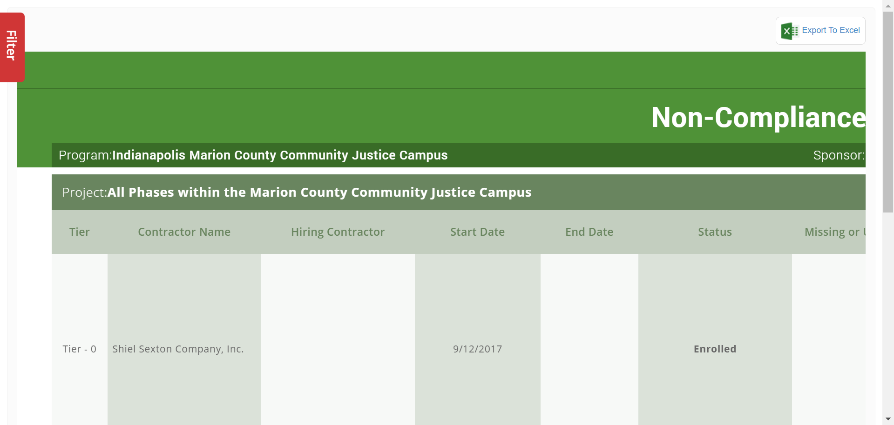 15:09:04 Report Header Name Matched 15:09:04 Report Generated Successfully 15:09:04 Program Name:- Indianapolis Marion County Community Justice Campus 15:09:04 Sponsor Name:- Shiel Sexton Company, Inc 15:09:04 Project Name:- All Phases within the Marion County Community Justice Campus 15:09:04 Time Stamp:- 09/02/2021 | 04:38:54 AM 15:09:04 PDF Option is Present:- true 15:09:04 Excel Option is Present:- true 15:09:04 ================= Column Name ================= 15:09:04 =====> Tier <===== 15:09:04 =====> Contractor Name <===== 15:09:04 =====> Hiring Contractor <===== 15:09:04 =====> Start Date <===== 15:09:04 =====> End Date <===== 15:09:04 =====> Status <===== 15:09:04 =====> Missing or Unconfirmed <===== 15:09:04 =====> Missing Payroll <===== 15:09:04 =====> Non-CIP COI Coverage <===== 15:09:04 =====> Primary Contact / Email / Phone# <===== 15:09:04 =====> Notes <===== 15:09:10 Project Selected Successfully 15:09:12 Contractor Selected Successfully 15:09:41 Clicked On Build Report Button 15:10:19 Excel file is not Downloaded Successfully 15:10:24 testNonComplianceReport Test has been Passed1 15:10:24 Test Ended -
Report_ProgramWideReportCard_Test :: testPorgramWideReportCard fail2021-09-02 15:10:47 2021-09-02 15:15:28 0h 4m 40s+199mstestPorgramWideReportCardFunctional Test
Status Timestamp Details 15:10:47 Test Started 15:10:47 Browser Name chrome 15:11:44 https://beta.wrapportal.com/login.aspx?ReturnUrl=%2f Current Url 15:11:44 nourNFP User Name Entered Successfully 15:11:44 8jlR8)b59k Password Entered Successfully 15:11:46 Clicked On Login Button 15:11:46 Login Successfully 15:12:29 Clicked on Report Module Icon 15:12:31 Indianapolis Marion County Community Justice Campus Program Select Form Dropdown 15:12:59 Program Wide Report Card Report is Selected 15:14:07 All Phases within the Marion County Community Justice Campus Project Selected Successfully 15:14:10 Contractor Selected Successfully 15:14:22 Clicked On Build Report Button 15:14:25 Report Generated 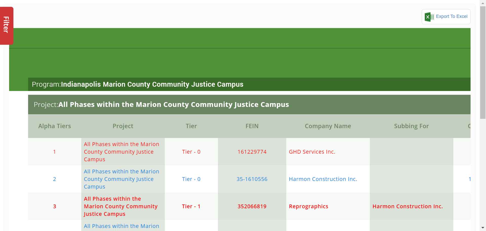 15:14:25 Report Header Name Matched 15:14:25 Report Generated Successfully 15:14:25 Program Name:- Indianapolis Marion County Community Justice Campus 15:14:25 Sponsor Name:- Shiel Sexton Company, Inc 15:14:25 Project Name:- All Phases within the Marion County Community Justice Campus 15:14:26 Time Stamp:- 09/02/2021 | 04:44:16 AM 15:14:26 PDF Option is Present:- true 15:14:26 Excel Option is Present:- true 15:14:26 ================= Column Name ================= 15:14:26 =====> Alpha Tiers <===== 15:14:26 =====> Project <===== 15:14:26 =====> Tier <===== 15:14:26 =====> FEIN <===== 15:14:26 =====> Company Name <===== 15:14:26 =====> Subbing For <===== 15:14:26 =====> CIP WC Policy <===== 15:14:26 =====> Enrollment Date <===== 15:14:26 =====> Start Date <===== 15:14:26 =====> End Date <===== 15:14:26 =====> CloseOut Date <===== 15:14:26 =====> Est Self Perf. Value <===== 15:14:26 =====> Final Self Perf. Value <===== 15:14:26 =====> Total Est. CV <===== 15:14:26 =====> Total Final CV <===== 15:14:26 =====> Excluded CV <===== 15:14:26 =====> Is Excluded <===== 15:14:26 =====> Is GL Only <===== 15:14:26 =====> Is Enrollment Confirmed <===== 15:14:26 =====> Is Closeout Confirmed <===== 15:14:26 =====> Estimated Payroll <===== 15:14:26 =====> Estimated Hours <===== 15:14:26 =====> Reported Payroll <===== 15:14:26 =====> Reported Hours <===== 15:14:26 =====> Total Est. Deduct <===== 15:14:26 =====> To-Date Deduct <===== 15:14:29 First Project Selected Successfully 15:14:44 Clicked On Build Report Button 15:14:50 Second Project Selected Successfully 15:15:07 Clicked On Build Report Button 15:15:23 Excel file is not Downloaded Successfully 15:15:28 testPorgramWideReportCard Test has been Passed1 15:15:28 Test Ended -
Report_ContractorProfileOld_Test :: testContractorProfile fail2021-09-02 15:15:59 2021-09-02 15:19:17 0h 3m 18s+594mstestContractorProfileFunctional Test
Status Timestamp Details 15:15:59 Test Started 15:15:59 Browser Name chrome 15:16:38 https://beta.wrapportal.com/login.aspx?ReturnUrl=%2f Current Url 15:16:38 nourNFP User Name Entered Successfully 15:16:38 8jlR8)b59k Password Entered Successfully 15:16:39 Clicked On Login Button 15:16:39 Login Successfully 15:17:16 Clicked on Report Module Icon 15:17:18 Respective Program Select Form Dropdown 15:17:41 Contractor Profile Report is Selected 15:18:37 Project Selected Successfully 15:18:40 Contractor Selected Successfully 15:18:44 Clicked On Build Report Button 15:18:47 Report Generated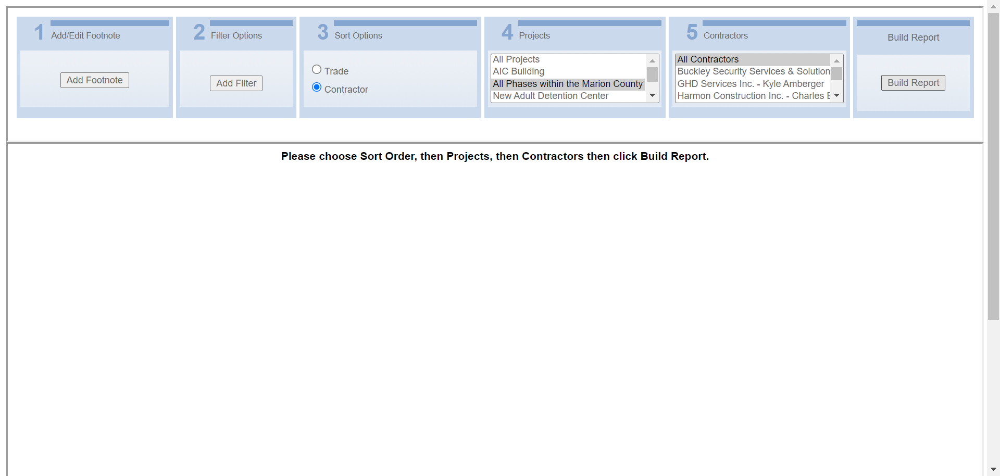 15:18:48 Report Header Name Matched 15:18:48 Report Generated Successfully 15:18:51 Pdf Generated 
15:19:06 Excel file is not Downloaded Successfully 15:19:17 testContractorProfile Test has been Passed1 15:19:17 Test Ended -
Report_ProgramFinancialAnalysisWorkClassOld_Test :: testProgramFinancialAnalysisWorkClassOld fail2021-09-02 15:19:39 2021-09-02 15:24:33 0h 4m 53s+893mstestProgramFinancialAnalysisWorkClassOldFunctional Test
Status Timestamp Details 15:19:39 Test Started 15:19:39 Browser Name chrome 15:20:25 https://beta.wrapportal.com/login.aspx?ReturnUrl=%2f Current Url 15:20:25 nourNFP User Name Entered Successfully 15:20:25 8jlR8)b59k Password Entered Successfully 15:20:27 Clicked On Login Button 15:20:27 Login Successfully 15:22:07 Clicked on Report Module Icon 15:22:09 Respective Program Select Form Dropdown 15:22:26 Program Financial Analysis Work Class Report is Selected 15:23:26 org.openqa.selenium.remote.UnreachableBrowserException: Error communicating with the remote browser. It may have died. Build info: version: '4.0.0-alpha-4', revision: 'c2d955b49e' System info: host: 'NOURTEK-100', ip: '192.168.29.211', os.name: 'Windows 10', os.arch: 'amd64', os.version: '10.0', java.version: '15.0.2' Driver info: driver.version: RemoteWebDriver Capabilities {acceptInsecureCerts: false, browserName: chrome, browserVersion: 93.0.4577.63, chrome: {chromedriverVersion: 92.0.4515.107 (87a818b10553..., userDataDir: C:\Users\NDave\AppData\Loca...}, goog:chromeOptions: {debuggerAddress: localhost:62347}, javascriptEnabled: true, networkConnectionEnabled: false, pageLoadStrategy: normal, platform: WINDOWS, platformName: WINDOWS, proxy: Proxy(), setWindowRect: true, strictFileInteractability: false, timeouts: {implicit: 0, pageLoad: 300000, script: 30000}, unhandledPromptBehavior: dismiss and notify, webauthn:extension:credBlob: true, webauthn:extension:largeBlob: true, webauthn:virtualAuthenticators: true} Session ID: 9add21f4c3bcaff1e4f6ff08ac124223 Something Went Wrong 15:23:32 Something Went Wrong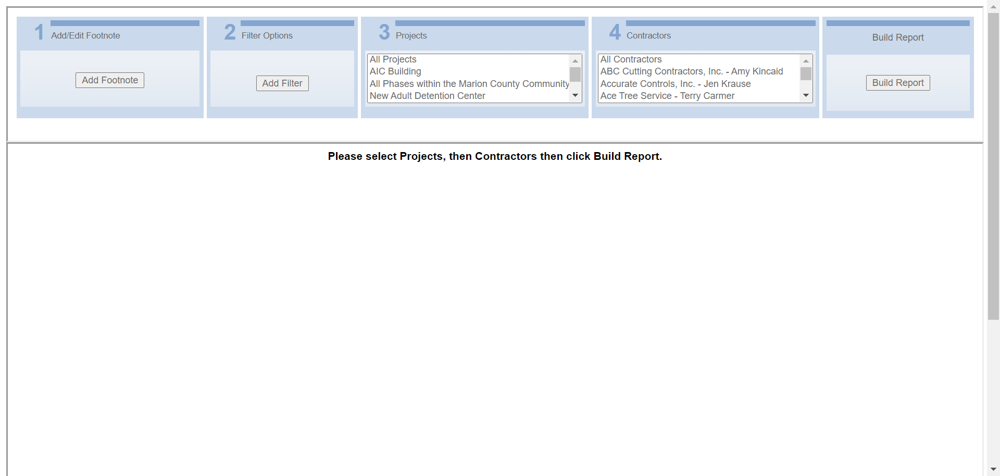 15:24:02 org.openqa.selenium.NoSuchElementException: no such element: Unable to locate element: {"method":"xpath","selector":"//span[@id='Label1']"} (Session info: chrome=93.0.4577.63) For documentation on this error, please visit: https://selenium.dev/exceptions/#no_such_element Build info: version: '4.0.0-alpha-4', revision: 'c2d955b49e' System info: host: 'NOURTEK-100', ip: '192.168.29.211', os.name: 'Windows 10', os.arch: 'amd64', os.version: '10.0', java.version: '15.0.2' Driver info: org.openqa.selenium.chrome.ChromeDriver Capabilities {acceptInsecureCerts: false, browserName: chrome, browserVersion: 93.0.4577.63, chrome: {chromedriverVersion: 92.0.4515.107 (87a818b10553..., userDataDir: C:\Users\NDave\AppData\Loca...}, goog:chromeOptions: {debuggerAddress: localhost:62347}, javascriptEnabled: true, networkConnectionEnabled: false, pageLoadStrategy: normal, platform: WINDOWS, platformName: WINDOWS, proxy: Proxy(), setWindowRect: true, strictFileInteractability: false, timeouts: {implicit: 0, pageLoad: 300000, script: 30000}, unhandledPromptBehavior: dismiss and notify, webauthn:extension:credBlob: true, webauthn:extension:largeBlob: true, webauthn:virtualAuthenticators: true} Session ID: 9add21f4c3bcaff1e4f6ff08ac124223 *** Element info: {Using=xpath, value=//span[@id='Label1']}Report Header Name Not Matched 15:24:02 Something Went Wrong 
15:24:32 testProgramFinancialAnalysisWorkClassOld Test has been Failed2 15:24:32 org.openqa.selenium.NoSuchElementException: no such element: Unable to locate element: {"method":"xpath","selector":"//a[@id='HlinkExportExcel']"} (Session info: chrome=93.0.4577.63) For documentation on this error, please visit: https://selenium.dev/exceptions/#no_such_element Build info: version: '4.0.0-alpha-4', revision: 'c2d955b49e' System info: host: 'NOURTEK-100', ip: '192.168.29.211', os.name: 'Windows 10', os.arch: 'amd64', os.version: '10.0', java.version: '15.0.2' Driver info: org.openqa.selenium.chrome.ChromeDriver Capabilities {acceptInsecureCerts: false, browserName: chrome, browserVersion: 93.0.4577.63, chrome: {chromedriverVersion: 92.0.4515.107 (87a818b10553..., userDataDir: C:\Users\NDave\AppData\Loca...}, goog:chromeOptions: {debuggerAddress: localhost:62347}, javascriptEnabled: true, networkConnectionEnabled: false, pageLoadStrategy: normal, platform: WINDOWS, platformName: WINDOWS, proxy: Proxy(), setWindowRect: true, strictFileInteractability: false, timeouts: {implicit: 0, pageLoad: 300000, script: 30000}, unhandledPromptBehavior: dismiss and notify, webauthn:extension:credBlob: true, webauthn:extension:largeBlob: true, webauthn:virtualAuthenticators: true} Session ID: 9add21f4c3bcaff1e4f6ff08ac124223 *** Element info: {Using=xpath, value=//a[@id='HlinkExportExcel']} at jdk.internal.reflect.GeneratedConstructorAccessor39.newInstance(Unknown Source) at java.base/jdk.internal.reflect.DelegatingConstructorAccessorImpl.newInstance(DelegatingConstructorAccessorImpl.java:45) at java.base/java.lang.reflect.Constructor.newInstanceWithCaller(Constructor.java:500) at java.base/java.lang.reflect.Constructor.newInstance(Constructor.java:481) at org.openqa.selenium.remote.codec.w3c.W3CHttpResponseCodec.createException(W3CHttpResponseCodec.java:196) at org.openqa.selenium.remote.codec.w3c.W3CHttpResponseCodec.decode(W3CHttpResponseCodec.java:129) at org.openqa.selenium.remote.codec.w3c.W3CHttpResponseCodec.decode(W3CHttpResponseCodec.java:53) at org.openqa.selenium.remote.HttpCommandExecutor.execute(HttpCommandExecutor.java:161) at org.openqa.selenium.remote.service.DriverCommandExecutor.execute(DriverCommandExecutor.java:83) at org.openqa.selenium.remote.RemoteWebDriver.execute(RemoteWebDriver.java:582) at org.openqa.selenium.remote.RemoteWebDriver.findElement(RemoteWebDriver.java:333) at org.openqa.selenium.remote.RemoteWebDriver.findElementByXPath(RemoteWebDriver.java:451) at org.openqa.selenium.By$ByXPath.findElement(By.java:394) at org.openqa.selenium.remote.RemoteWebDriver.findElement(RemoteWebDriver.java:325) at ObjectRepository.Report_EnrollmentListReportOld.linkExportToExcel(Report_EnrollmentListReportOld.java:80) at TestScript.Report_ProgramFinancialAnalysisWorkClassOld_Test.testProgramFinancialAnalysisWorkClassOld(Report_ProgramFinancialAnalysisWorkClassOld_Test.java:91) at java.base/jdk.internal.reflect.NativeMethodAccessorImpl.invoke0(Native Method) at java.base/jdk.internal.reflect.NativeMethodAccessorImpl.invoke(NativeMethodAccessorImpl.java:64) at java.base/jdk.internal.reflect.DelegatingMethodAccessorImpl.invoke(DelegatingMethodAccessorImpl.java:43) at java.base/java.lang.reflect.Method.invoke(Method.java:564) at org.testng.internal.MethodInvocationHelper.invokeMethod(MethodInvocationHelper.java:133) at org.testng.internal.TestInvoker.invokeMethod(TestInvoker.java:598) at org.testng.internal.TestInvoker.invokeTestMethod(TestInvoker.java:173) at org.testng.internal.MethodRunner.runInSequence(MethodRunner.java:46) at org.testng.internal.TestInvoker$MethodInvocationAgent.invoke(TestInvoker.java:824) at org.testng.internal.TestInvoker.invokeTestMethods(TestInvoker.java:146) at org.testng.internal.TestMethodWorker.invokeTestMethods(TestMethodWorker.java:146) at org.testng.internal.TestMethodWorker.run(TestMethodWorker.java:128) at java.base/java.util.ArrayList.forEach(ArrayList.java:1511) at org.testng.TestRunner.privateRun(TestRunner.java:794) at org.testng.TestRunner.run(TestRunner.java:596) at org.testng.SuiteRunner.runTest(SuiteRunner.java:377) at org.testng.SuiteRunner.runSequentially(SuiteRunner.java:371) at org.testng.SuiteRunner.privateRun(SuiteRunner.java:332) at org.testng.SuiteRunner.run(SuiteRunner.java:276) at org.testng.SuiteRunnerWorker.runSuite(SuiteRunnerWorker.java:53) at org.testng.SuiteRunnerWorker.run(SuiteRunnerWorker.java:96) at org.testng.TestNG.runSuitesSequentially(TestNG.java:1212) at org.testng.TestNG.runSuitesLocally(TestNG.java:1134) at org.testng.TestNG.runSuites(TestNG.java:1063) at org.testng.TestNG.run(TestNG.java:1031) at org.testng.remote.AbstractRemoteTestNG.run(AbstractRemoteTestNG.java:115) at org.testng.remote.RemoteTestNG.initAndRun(RemoteTestNG.java:251) at org.testng.remote.RemoteTestNG.main(RemoteTestNG.java:77)15:24:33 
15:24:33 Test Ended -
Report_ClaimsReportOld_Test :: testClaimsReportOld fail2021-09-02 15:25:14 2021-09-02 15:28:10 0h 2m 55s+964mstestClaimsReportOldFunctional Test
Status Timestamp Details 15:25:14 Test Started 15:25:14 Browser Name chrome 15:26:03 https://beta.wrapportal.com/login.aspx?ReturnUrl=%2f Current Url 15:26:03 nourNFP User Name Entered Successfully 15:26:03 8jlR8)b59k Password Entered Successfully 15:26:05 Clicked On Login Button 15:26:05 Login Successfully 15:27:20 org.openqa.selenium.remote.UnreachableBrowserException: Error communicating with the remote browser. It may have died. Build info: version: '4.0.0-alpha-4', revision: 'c2d955b49e' System info: host: 'NOURTEK-100', ip: '192.168.29.211', os.name: 'Windows 10', os.arch: 'amd64', os.version: '10.0', java.version: '15.0.2' Driver info: driver.version: RemoteWebDriver Capabilities {acceptInsecureCerts: false, browserName: chrome, browserVersion: 93.0.4577.63, chrome: {chromedriverVersion: 92.0.4515.107 (87a818b10553..., userDataDir: C:\Users\NDave\AppData\Loca...}, goog:chromeOptions: {debuggerAddress: localhost:63500}, javascriptEnabled: true, networkConnectionEnabled: false, pageLoadStrategy: normal, platform: WINDOWS, platformName: WINDOWS, proxy: Proxy(), setWindowRect: true, strictFileInteractability: false, timeouts: {implicit: 0, pageLoad: 300000, script: 30000}, unhandledPromptBehavior: dismiss and notify, webauthn:extension:credBlob: true, webauthn:extension:largeBlob: true, webauthn:virtualAuthenticators: true} Session ID: 216b22667ba050a3c09aa84b2b8f8c3f Something Went Wrong 15:27:36 Something Went Wrong 
15:27:37 org.openqa.selenium.NoSuchFrameException: no such frame (Session info: chrome=93.0.4577.63) Build info: version: '4.0.0-alpha-4', revision: 'c2d955b49e' System info: host: 'NOURTEK-100', ip: '192.168.29.211', os.name: 'Windows 10', os.arch: 'amd64', os.version: '10.0', java.version: '15.0.2' Driver info: org.openqa.selenium.chrome.ChromeDriver Capabilities {acceptInsecureCerts: false, browserName: chrome, browserVersion: 93.0.4577.63, chrome: {chromedriverVersion: 92.0.4515.107 (87a818b10553..., userDataDir: C:\Users\NDave\AppData\Loca...}, goog:chromeOptions: {debuggerAddress: localhost:63500}, javascriptEnabled: true, networkConnectionEnabled: false, pageLoadStrategy: normal, platform: WINDOWS, platformName: WINDOWS, proxy: Proxy(), setWindowRect: true, strictFileInteractability: false, timeouts: {implicit: 0, pageLoad: 300000, script: 30000}, unhandledPromptBehavior: dismiss and notify, webauthn:extension:credBlob: true, webauthn:extension:largeBlob: true, webauthn:virtualAuthenticators: true} Session ID: 216b22667ba050a3c09aa84b2b8f8c3fReport Header Name Not Matched 15:27:38 Something Went Wrong 
15:28:08 testClaimsReportOld Test has been Failed2 15:28:08 org.openqa.selenium.NoSuchElementException: no such element: Unable to locate element: {"method":"xpath","selector":"//a[@id='HlinkExportPDF']"} (Session info: chrome=93.0.4577.63) For documentation on this error, please visit: https://selenium.dev/exceptions/#no_such_element Build info: version: '4.0.0-alpha-4', revision: 'c2d955b49e' System info: host: 'NOURTEK-100', ip: '192.168.29.211', os.name: 'Windows 10', os.arch: 'amd64', os.version: '10.0', java.version: '15.0.2' Driver info: org.openqa.selenium.chrome.ChromeDriver Capabilities {acceptInsecureCerts: false, browserName: chrome, browserVersion: 93.0.4577.63, chrome: {chromedriverVersion: 92.0.4515.107 (87a818b10553..., userDataDir: C:\Users\NDave\AppData\Loca...}, goog:chromeOptions: {debuggerAddress: localhost:63500}, javascriptEnabled: true, networkConnectionEnabled: false, pageLoadStrategy: normal, platform: WINDOWS, platformName: WINDOWS, proxy: Proxy(), setWindowRect: true, strictFileInteractability: false, timeouts: {implicit: 0, pageLoad: 300000, script: 30000}, unhandledPromptBehavior: dismiss and notify, webauthn:extension:credBlob: true, webauthn:extension:largeBlob: true, webauthn:virtualAuthenticators: true} Session ID: 216b22667ba050a3c09aa84b2b8f8c3f *** Element info: {Using=xpath, value=//a[@id='HlinkExportPDF']} at jdk.internal.reflect.GeneratedConstructorAccessor39.newInstance(Unknown Source) at java.base/jdk.internal.reflect.DelegatingConstructorAccessorImpl.newInstance(DelegatingConstructorAccessorImpl.java:45) at java.base/java.lang.reflect.Constructor.newInstanceWithCaller(Constructor.java:500) at java.base/java.lang.reflect.Constructor.newInstance(Constructor.java:481) at org.openqa.selenium.remote.codec.w3c.W3CHttpResponseCodec.createException(W3CHttpResponseCodec.java:196) at org.openqa.selenium.remote.codec.w3c.W3CHttpResponseCodec.decode(W3CHttpResponseCodec.java:129) at org.openqa.selenium.remote.codec.w3c.W3CHttpResponseCodec.decode(W3CHttpResponseCodec.java:53) at org.openqa.selenium.remote.HttpCommandExecutor.execute(HttpCommandExecutor.java:161) at org.openqa.selenium.remote.service.DriverCommandExecutor.execute(DriverCommandExecutor.java:83) at org.openqa.selenium.remote.RemoteWebDriver.execute(RemoteWebDriver.java:582) at org.openqa.selenium.remote.RemoteWebDriver.findElement(RemoteWebDriver.java:333) at org.openqa.selenium.remote.RemoteWebDriver.findElementByXPath(RemoteWebDriver.java:451) at org.openqa.selenium.By$ByXPath.findElement(By.java:394) at org.openqa.selenium.remote.RemoteWebDriver.findElement(RemoteWebDriver.java:325) at ObjectRepository.Report_EnrollmentListReportOld.linkExportToPDF(Report_EnrollmentListReportOld.java:90) at TestScript.Report_ClaimsReportOld_Test.testClaimsReportOld(Report_ClaimsReportOld_Test.java:80) at java.base/jdk.internal.reflect.NativeMethodAccessorImpl.invoke0(Native Method) at java.base/jdk.internal.reflect.NativeMethodAccessorImpl.invoke(NativeMethodAccessorImpl.java:64) at java.base/jdk.internal.reflect.DelegatingMethodAccessorImpl.invoke(DelegatingMethodAccessorImpl.java:43) at java.base/java.lang.reflect.Method.invoke(Method.java:564) at org.testng.internal.MethodInvocationHelper.invokeMethod(MethodInvocationHelper.java:133) at org.testng.internal.TestInvoker.invokeMethod(TestInvoker.java:598) at org.testng.internal.TestInvoker.invokeTestMethod(TestInvoker.java:173) at org.testng.internal.MethodRunner.runInSequence(MethodRunner.java:46) at org.testng.internal.TestInvoker$MethodInvocationAgent.invoke(TestInvoker.java:824) at org.testng.internal.TestInvoker.invokeTestMethods(TestInvoker.java:146) at org.testng.internal.TestMethodWorker.invokeTestMethods(TestMethodWorker.java:146) at org.testng.internal.TestMethodWorker.run(TestMethodWorker.java:128) at java.base/java.util.ArrayList.forEach(ArrayList.java:1511) at org.testng.TestRunner.privateRun(TestRunner.java:794) at org.testng.TestRunner.run(TestRunner.java:596) at org.testng.SuiteRunner.runTest(SuiteRunner.java:377) at org.testng.SuiteRunner.runSequentially(SuiteRunner.java:371) at org.testng.SuiteRunner.privateRun(SuiteRunner.java:332) at org.testng.SuiteRunner.run(SuiteRunner.java:276) at org.testng.SuiteRunnerWorker.runSuite(SuiteRunnerWorker.java:53) at org.testng.SuiteRunnerWorker.run(SuiteRunnerWorker.java:96) at org.testng.TestNG.runSuitesSequentially(TestNG.java:1212) at org.testng.TestNG.runSuitesLocally(TestNG.java:1134) at org.testng.TestNG.runSuites(TestNG.java:1063) at org.testng.TestNG.run(TestNG.java:1031) at org.testng.remote.AbstractRemoteTestNG.run(AbstractRemoteTestNG.java:115) at org.testng.remote.RemoteTestNG.initAndRun(RemoteTestNG.java:251) at org.testng.remote.RemoteTestNG.main(RemoteTestNG.java:77)15:28:10 15:28:10 Test Ended